Research case study · Internship (PFA) · Albarray Consulting · 2026
Detecting faults from few labels: what a photovoltaic detector shows, and what it does not
A model of normal operation, learned from healthy data only, detects staged shading faults on a solar plant and runs on a live stream. Re-examining that result showed how little a handful of fault episodes can establish, and which questions remain open.
Research question. With only a few labelled fault episodes, how far can a model of normal operation be trusted, and what evidence does it take to show it?
Setting. A 4 kW grid-connected plant in La Réunion, 18 months of electrical and weather data at five-minute resolution, 17 staged shading incidents, all between February and May 2022.
What was built. Five dense and five LSTM autoencoders trained on healthy points only, fused by rank against a frozen reference, evaluated on a strictly chronological split, and ported to a Kafka streaming prototype that reproduces the offline scores exactly.
What the test showed. All 3 test episodes detected, recall 0.97, precision 0.70, PR-AUC 0.78 (base rate 0.026).
What re-examination showed. A training-free nearest-neighbour distance does as well as the ten networks. The temporal half of the ensemble adds nothing on test. The 3/3 result has a 95% interval of 0.29 to 1. And in the austral winter, a season absent from training, the detector raises 4 to 11 false alarms a week. A leave-one-incident-out evaluation over all 17 incidents then showed that no method is significantly better than the nearest-neighbour baseline, and located the real difficulty: separating faults from normal variability across days, not within a day.
What it means. The method works as a proof of concept for one fault signature, in one season, on one plant. It is not yet a measured operating performance.
Questions, experiments and evidence
The project started as an engineering task: detect shading faults without training on labelled faults, and score measurements as they arrive. It became a study of evidence. Each row below is a question the work had to answer, the experiment used, and what the data actually supports. The full study follows, in the order it was done.
| Question | Experiment | What the evidence supports |
|---|---|---|
| Can normal operation serve as the reference? | Autoencoders trained on 9,618 healthy points; chronological split with cut days outside every incident | For staged shading, yes: 4 of 4 validation and 3 of 3 test episodes detected, test ROC-AUC 0.996. Only one fault signature was tested. Test |
| Is the complexity needed? | Ensemble against kNN and Mahalanobis distances on the same points, same threshold rule | Not shown. On the 3 test episodes kNN scores 0.88 against 0.78; across all 17 incidents, refitted inside each fold, no method differs significantly from kNN, and none dominates on every criterion. 17 incidents |
| Does temporal context help? | Dense autoencoders against LSTM autoencoders, alone and fused | Not established. The LSTM scores best on intermittent shading across the 17 incidents, but the gap rests mainly on one incident, and temporal context without an LSTM does not help. 17 incidents |
| How solid is the test result? | Exact interval on episodes; block bootstrap over days | 3/3 episodes gives 0.29 to 1; test PR-AUC 0.48 to 0.94. The 3 test episodes repeat one staged experiment. Test |
| Does the detector hold over time? | Deployed system scored on the 10.5 fault-free months after the study period | No: 4 to 11 false-alarm events a week from June to September, 0 to 1 the rest of the year. Seasons |
| Is the operating point stable? | Same architecture retrained with five other seeds; references and threshold recomputed | Partly. Ranking quality holds (test PR-AUC 0.78 to 0.82 over three ensembles), but test precision ranges from 0.53 to 0.74 and false alarms from 2.4 to 5.1 a week. Threshold |
| Where does detection actually fail? | Same deployed predictions evaluated within each fault day and across all 27 test days | Across days. Within a fault day most methods are near perfect (PR-AUC 0.96 to 0.996); over 27 days they fall to 0.26 to 0.88, because healthy points of other days score as high as faults. 17 incidents |
| Does the protocol survive streaming? | Kafka replay of the test period against offline scoring; crash and restart; automated tests | Yes: identical scores and alarms on every replayed point, no duplicate alarm after a crash. Running system |
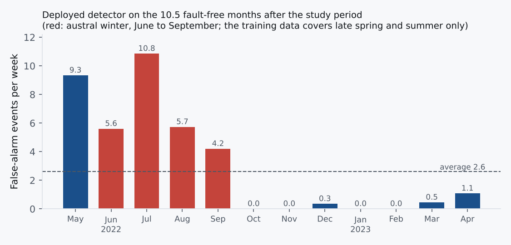
What this experiment revealed
A high score on three staged episodes was the easy part. The harder questions are the ones the evaluation exposed. None of them is solved here; they are the questions I would pursue next.
| Observation | Limitation it exposes | Open question |
|---|---|---|
| Winter false alarms recur at fixed hours, around 08:00 and 16:00 local, with a shading-like signature | The plant is a system driven by the sun and the seasons; a model trained on one season sees every winter sun position as new | How can a detector separate the slow, driven drift of a system from a genuine departure, for instance by modelling the system in its state space or by detecting the distribution shift explicitly? |
| Within a fault day most detectors rank faults almost perfectly; across 27 days their precision falls sharply | Scores are not comparable from one day to the next: normal variability between days (sun position, season) looks like a fault | How can anomaly scores be made comparable across days and seasons, so that a detector separates faults from normal operating variability rather than from its immediate context? |
| Across 17 incidents, no method differs significantly from a nearest-neighbour distance, and none dominates on every criterion | With this evidence, a learned representation cannot be shown to beat a neighbour search in the raw state space; the choice is a trade-off between recall, false alarms and cost | When does a learned model of normal dynamics beat local neighbours, and how many events does it take to tell? |
| The threshold was chosen on four validation episodes | A site with no labelled history cannot calibrate this way, and the operating point moves with the seeds | Can the alarm threshold be set from a false-alarm budget measured on healthy data alone, with stated uncertainty? |
| The LSTM's collapse on the test sub-type was a scope effect: it ranks faults well within each day, but healthy points of other days outscore them | A first explanation (the healthy reference was too far in time) was tested and rejected | What does a temporal model of normal operation actually learn, and why are its scores less comparable across days than those of a point-wise model? |
| Every fault is staged shading on one plant | Rare, real faults (soiling, degradation, inverter or sensor faults) were never observed | How should a detector of rare events be evaluated when the events of interest are almost never labelled? |
This project changed what I think the problem is. Detecting an anomaly is not only about scoring departures from normal; it is about knowing what normal variability looks like across all the conditions a system goes through, and about how much a small number of rare events can prove. The evaluation over 17 incidents made this concrete: the detectors rarely fail to see a fault against its own day; they fail to tell it apart from the normal variability of other days. Those are the questions I want to work on: learning the normal dynamics of complex systems from data, and detecting when they depart from it, with few labelled events and under changing conditions.
My role, and how the results were checked
- Topic. Chosen with my internship supervisor; the dataset (Zenodo record 7358042) was provided by the supervisor.
- My work. Data merging and cleaning, the chronological protocol, the leave-one-incident-out evaluation, feature investigation, the three detectors and the fusion, the evaluation, and the streaming prototype (Kafka, scoring consumer, TimescaleDB, Grafana, tests).
- External review. After the internship, an external review of the project re-ran the pipeline and identified the gaps in the evaluation: no simple baselines, no uncertainty, no seasonal test, and claims stronger than the evidence. The baselines, intervals, seasonal analysis and seed sensitivity on this page were added in response, and the write-up was corrected.
- Reproducibility. One notebook covers the whole study: sections 1 to 15 the original work, section 16 every number added after the review, and section 17 the evaluation across all 17 incidents, with its cached scores. It runs from a clone without the raw 2.3 GB files. The deployed models, scalers, references and threshold are versioned, and the streaming path is covered by automated tests.
The full study, in the order it was done
The sections below follow the work chronologically, including the parts that did not work. The baselines, intervals, seasonal analysis and seed sensitivity were added after the external review and are marked as such where they appear.
Objective
Photovoltaic plants fail quietly. Shading and other partial faults do not stop production; they bend it downward, for days or weeks, until someone compares an invoice to an expectation. The staged faults in this dataset cost about 18% of output; milder faults of a few percent were not available to test. The output still looks like output.
The obvious answer (train a classifier on past faults) collides with the reason the problem exists. Operators rarely keep labelled fault archives, and when they do, the archive covers the failures that were noticed. So the system is built the other way round: learn what a healthy plant looks like, and flag departures from it. No fault is ever shown during training.
Constraints that shaped every later decision
- No labels to fit the networks. The networks are trained on healthy points only. Labels are used elsewhere in the design, for feature selection, tuning, fusion, the threshold, and to report results, so the method is semi-supervised rather than unsupervised.
- Recall over precision. A missed fault costs weeks of production; a false alarm costs one technician one look.
- Early detection. A fault caught on its first measurement is worth far more than the same fault caught on its fortieth.
- Streaming. The system must score one five-minute measurement at a time, without access to the batch it belongs to.
That last constraint shaped more of the design than any modelling choice. A score that depends on the batch it is computed in is easy to obtain offline and meaningless in production, where the batch is a single point. It is the reason the final fusion ranks against a frozen reference rather than against the current data.
First look at the data
The dataset was provided by the project supervisor. It is a public record on Zenodo from a 4 kW domestic installation in La Réunion: sensor logs from a grid-connected photovoltaic installation, exported from the plant's acquisition system as two separate files recorded by two separate subsystems. Reconciling them is the first problem to solve.
| File | Contents | Volume |
|---|---|---|
| dt1: meteorological | Diffuse and global irradiance (DTI, GTI), ambient and panel temperature (TA, TPV) | 2.14 GB, one row per second |
| dt2: electrical | Inverter and grid currents and voltages (Ia, Ig, Va, Vg), power (Pg), energy (Eg), frequency (Fg), and the Fault label | 193 MB, 2,988,814 rows |
The meteorological file, first rows
| time | DTI | GTI | TA | TPV |
|---|---|---|---|---|
| 2021-10-28 16:37:45+04:00 | 148.8 | 193.8 | 26.99 | 31.03 |
| 2021-10-28 16:37:46+04:00 | 148.8 | 193.8 | 26.94 | 31.00 |
| 2021-10-28 16:37:47+04:00 | 148.8 | 193.8 | 26.93 | 31.01 |
| 2021-10-28 16:37:48+04:00 | 151.5 | 193.8 | 26.98 | 31.02 |
| 2021-10-28 16:37:49+04:00 | 148.8 | 193.8 | 27.02 | 31.01 |
Three things are visible in five rows. The sampling is per second, and irradiance
barely moves across four of them: the sensor's effective resolution is far coarser
than its sampling rate, which is the first argument for resampling rather than
modelling at this granularity. Temperatures do move, at the second scale, which is
noise rather than physics. And the timestamp carries a +04:00 offset
stored as text: parsed naïvely, one file would end up shifted four hours against the
other and every measurement would be joined to the wrong weather. Both files were
checked on this point before any join was attempted.
The electrical file, structure and completeness
| Column | Type | Missing |
|---|---|---|
| time | object (text) | 0 |
| Fault | float64 | 6 |
| Ia, Ig, Eg, Fg, Pg, Va, Vg | float64 | 10 each |
Sixteen missing values in three million rows: the acquisition chain is
exceptionally complete, which rules out imputation strategy as a topic and lets the
project move straight to the harder problem. Note that Fault is stored
as a float and has its own six gaps: it is not a clean binary column but a numeric
code with missing entries, which matters when resampling it.
Descriptive statistics, before any processing
| Statistic | Fault | Ia | Ig | Eg | Fg |
|---|---|---|---|---|---|
| count | 2,988,808 | 2,988,804 | 2,988,804 | 2,988,804 | 2,988,804 |
| mean | 0.0996 | 3.841 | 2.731 | 3.424 | 49.910 |
| std | 0.603 | 2.895 | 2.020 | 2.633 | 1.928 |
| min | 0.000 | 0.000 | 0.000 | 0.000 | 0.000 |
| 25% | 0.000 | 1.100 | 0.800 | 0.861 | 49.950 |
| 50% | 0.000 | 3.200 | 2.300 | 3.226 | 49.980 |
| 75% | 0.000 | 6.500 | 4.600 | 5.633 | 50.000 |
The grid frequency column is the interesting one. Its quartiles sit within 0.05 Hz of each other around 50 Hz, a perfectly regulated grid, yet its minimum is zero and its standard deviation is 1.93, two orders of magnitude above the interquartile spread. A frequency of exactly zero is not a low reading; it is a sensor that is not reading. That single line predicted the disconnection artefact found during cleaning, before any plot was drawn.
| Statistic | DTI | GTI | TA | TPV |
|---|---|---|---|---|
| mean | 91.63 | 106.60 | 23.88 | 26.80 |
| std | 143.40 | 180.90 | 2.95 | 8.23 |
| min | 1.34 | 1.38 | 20.64 | 20.35 |
| 50% | 5.37 | 6.88 | 23.23 | 22.25 |
| 75% | 124.70 | 144.40 | 26.40 | 30.64 |
| max | 609.00 | 1583.00 | 31.76 | 57.47 |
Irradiance has a median of 6.88 W/m² and a maximum of 1,583: the median sits near zero because most of the record is night. Any statistic computed over the full file therefore describes darkness, not operation. That is why the working set is later restricted to daylight, and it is also why the panel temperature spread (20.35 to 57.47 °C) is far wider than the ambient one: the panel heats under sun and cools to air temperature at night, while the air barely moves.
The label is a taxonomy, not a flag
| Fault code | Rows (raw, per second) |
|---|---|
| 0.0: normal | 2,904,289 |
| 1.0: uniform shading | 6,318 |
| 2.1 / 2.2 / 2.3: partial shading, 1 / 2 / 3 modules | 2,148 / 2,460 / 3,287 |
| 3.1: partial shading, 1/3 of a module | 2,717 |
| 3.2: partial shading, 2/3 of a module | 6,292 |
| 4.0: intermittent shading | 61,297 |
Type 4.0 alone accounts for 61,297 of the 84,525 flagged seconds, while type 3.1 appears 2,717 times: a twenty-three-fold imbalance between fault types, on top of the imbalance between healthy and faulty. This is not a detail: it determines which types can be studied, which cannot, and, because of where they fall in time, which type ends up alone in the test partition at the end of the project.
Merging two clocks
The two files cannot be joined as they stand. They start on different dates, they are sampled differently, and neither guarantees a measurement at any given instant. Joining on exact timestamps would return almost nothing.
Both streams are therefore resampled onto a common five-minute grid, then joined on that grid. Five minutes is short enough to catch the onset of an episode (the shortest incident in the dataset lasts about six minutes) and long enough to smooth acquisition noise and make 2.3 GB of raw input tractable.
The numeric channels are averaged within each bucket. The Fault label
cannot be: averaging the codes 3.2 and 4.0 would produce 3.6, a fault type that does
not exist. It is aggregated by mode instead: the dominant code in the bucket wins.
Show code: resampling and joining the two streams
# dt1 is 2.14 GB: read in chunks, index, then resample before anything else
chunks = []
for chunk in pd.read_csv(FICHIER_DT1, chunksize=500_000):
chunk["time"] = pd.to_datetime(chunk["time"], utc=True) # normalise the +04:00 offset
chunks.append(chunk.set_index("time").sort_index())
dt1 = pd.concat(chunks)
del chunks # free the list, otherwise two copies coexist
dt1_5min = dt1.resample("5min").mean().dropna()
del dt1 # free ~1 GB before continuing
# the Fault code is categorical: mode, never mean
fault_5min = dt2["Fault"].resample("5min").apply(
lambda x: x.mode().iloc[0] if len(x) > 0 and not x.mode().empty else np.nan
)
dt2_numeric = dt2.drop(columns=["Fault"]).resample("5min").mean()
dt2_5min = dt2_numeric.join(fault_5min).dropna()
df = dt1_5min.join(dt2_5min, how="inner") # inner join on the time index
df = df[df["GTI"] > 50].copy() # daylight only
Two details in this block matter more than they look. The explicit
del statements are not stylistic: resampling a 2.14 GB frame while the
original is still referenced holds both in memory at once, which is what made the
first attempts fail. And the daylight filter GTI > 50 is applied
here rather than later: a plant produces nothing at night, and a reconstruction
model trained on darkness learns to predict zeros extremely well while learning
nothing about faults.
The result is 53,016 rows across 12 columns, spanning 28 October 2021 to 13 April 2023. Because this step takes ten minutes and needs both raw files, its output is cached; the notebook detects whether the raw files are present and reloads the cache otherwise, announcing which of the two situations it is in.
Cleaning
Cleaning an anomaly detection dataset is a delicate exercise, because the standard cleaning move (remove the outliers) removes exactly what the project is trying to find. Every filter here had to be justified by a physical argument rather than a statistical one.
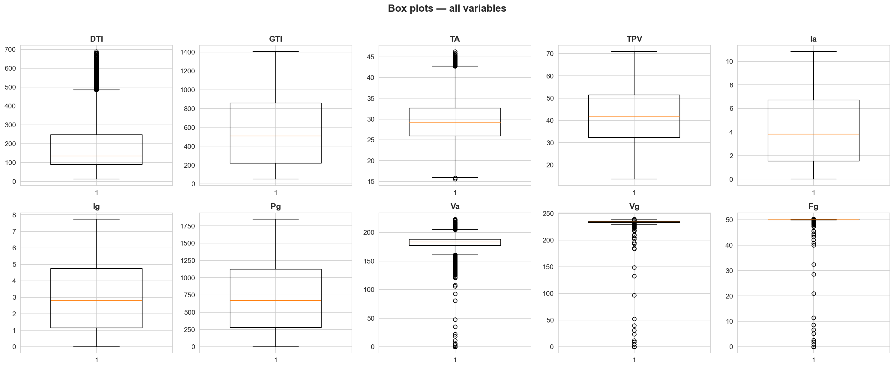
Physical plausibility
The first pass checks values against physics rather than against quantiles: negative
power, irradiance above 1,500 W/m², sub-zero panel temperature. All three came back
empty. One check did not: 57 rows carry Va = Vg = Fg = 0
simultaneously, the artefact the descriptive statistics had already hinted at. A
grid-connected inverter cannot have zero voltage and zero frequency while the sun is
up. That looks like a disconnected acquisition unit rather than a plant state. One check came later and changed
the reading: 56 of these 57 rows are labelled Fault 1 (uniform shading), half of all Fault 1 data. Removing them
therefore also removed labelled faults. They all fall in training, so no reported metric changes, but they are
better described as fault rows with zero voltages than as sensor errors.
Show code: removing disconnected-sensor rows
avant = len(df)
df = df[~((df["Va"] == 0) & (df["Vg"] == 0) & (df["Fg"] == 0))]
print(f"Removed: {avant - len(df)} rows (disconnected sensor: Va=Vg=Fg=0)")
print(f"Remaining: {len(df):,} rows")
# Removed: 57 rows (disconnected sensor: Va=Vg=Fg=0)
# Remaining: 52,959 rows
The condition is a conjunction of all three channels, not a filter on any one of
them. Va == 0 alone would also remove genuine inverter shutdowns, which
are plant states worth detecting. Requiring voltage, grid voltage and frequency to
be simultaneously zero identifies the acquisition failure specifically: 57 rows out
of 53,016, leaving 52,959.
Statistical outliers, deliberately kept
Two standard detectors were then run purely as diagnostics, and their results are worth reading against each other.
| Sensor | Z-score > 3 | IQR rule |
|---|---|---|
| Va | 689 (1.30%) | 1,389 (2.62%) |
| DTI | 431 (0.81%) | 1,470 (2.77%) |
| Vg | 73 (0.14%) | 1,438 (2.71%) |
| Fg | 73 (0.14%) | 1,343 (2.53%) |
| GTI, TPV, Ia, Ig, Pg | 0 | 0 |
The two methods disagree by a factor of twenty on Vg, which is itself informative:
the Z-score assumes an approximately normal distribution, and grid voltage is not
normal. But the decisive point is the sensor at the top of both columns. Va (inverter output voltage) is where the anomalies live, flagged at a rate close to
the 2.8% fault rate of the dataset. Deleting those rows would have deleted the
signal. Nothing was removed on statistical grounds, and va_deviation
later became one of the four most discriminating engineered features.
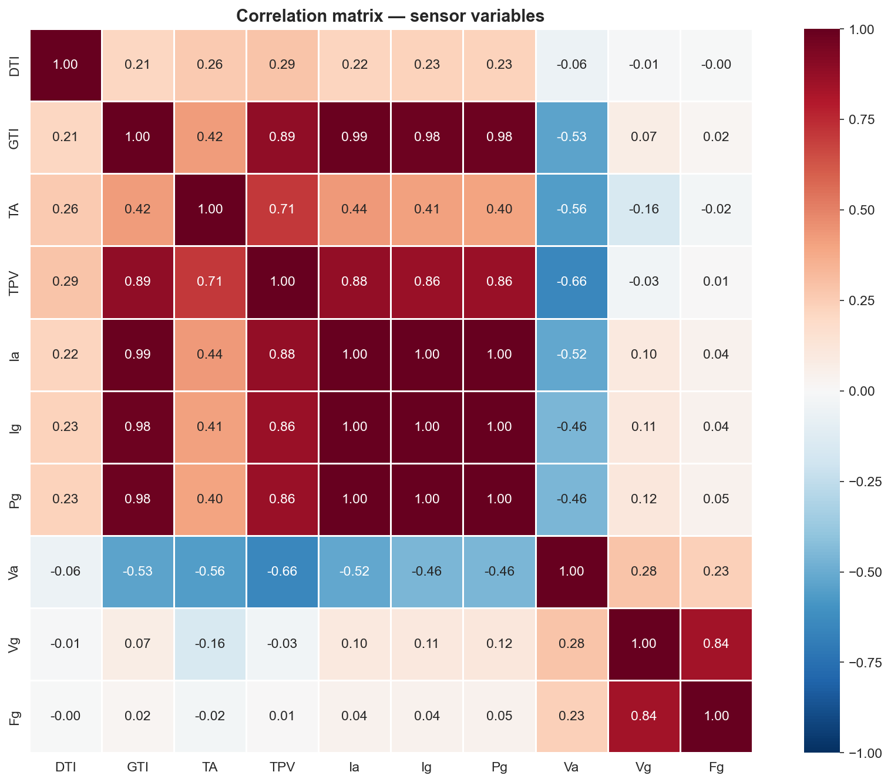
Several sensors carry the same information twice: irradiance and generated power correlate at 0.98, and the current channels track each other closely. For a reconstruction model this matters: a redundant input is an easy reconstruction target that inflates apparent performance without contributing detection power. This matrix is the first argument for the ablation studies that follow, rather than for feeding everything to the model.
Exploration
Six views, each of which changed a later decision. This is where the project's constraints stopped being assumptions and became measurements.
How rare is a fault, and which kind
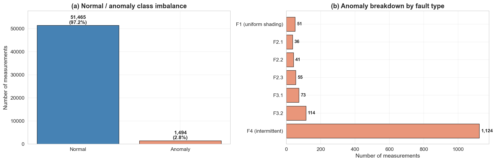
After resampling, 51,465 of 52,959 measurements are normal. The 1,494 anomalies break down into 1,124 points of intermittent shading (type 4) and between 36 and 114 points for every other type. Two consequences follow. First, accuracy is useless here: flagging nothing scores 97.2%. Every number on this page is therefore PR-AUC, area under the precision–recall curve, quoted against the base rate of its partition. Second, the rare fault types have so few points that no model can be tuned on them individually.
The relationship the whole project rests on
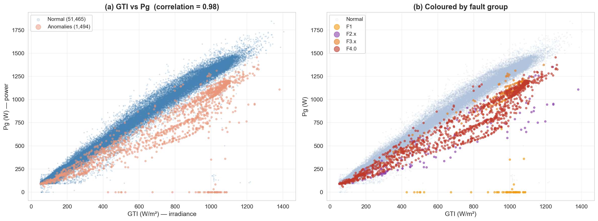
Power and irradiance correlate at 0.98 along a near-linear relation, and the
anomalies form a distinct cloud underneath it. At equal available light, a
degraded plant produces less. That single observation is the physical basis of the
project, and it directly motivated the yield feature ratio_pg_gti built
two sections later. Neither variable alone shows anything; their ratio does.
Where else the fault shows up
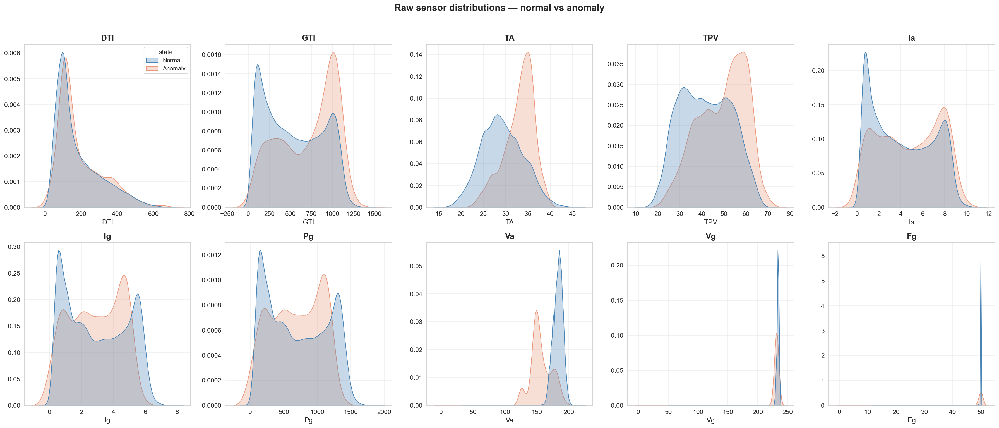
Most sensors overlap almost completely between the two classes, which is why a
single-variable threshold rule was never a candidate. Two exceptions stand out: the
AC voltage Va and the currents Ia and Ig show a visible shift. That observation
produced va_deviation, and the shape of the shift (a spread rather
than a translation) suggested measuring a deviation from an expected value rather
than a raw level.
The finding that saved the split
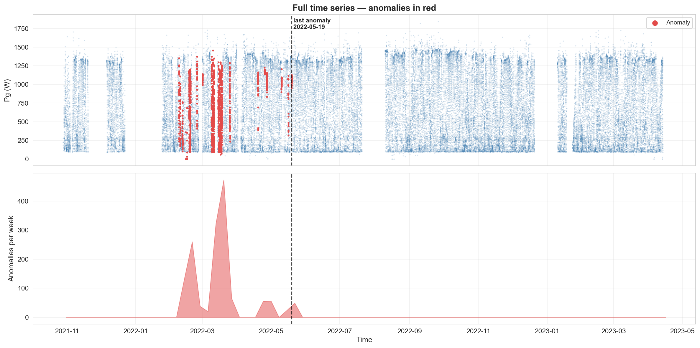
This is the most consequential plot in the exploration. The record runs to April 2023, but the last labelled anomaly occurs on 19 May 2022. Everything after it (35,684 rows, 67% of the record) is pure normal operation. A chronological split over the full series would have placed the entire test partition in that empty zone, and detection could not have been measured at all. For measuring detection, the study period had to be truncated, and this figure is why. That reasoning was incomplete: a fault-free period cannot measure detection, but it measures the false-alarm rate directly, and it is the only part of the record that covers other seasons. The 33,226 scored points after 26 May were left out of the original analysis; they are analysed in the seasonal section below.
Day, night, and why sequences must break
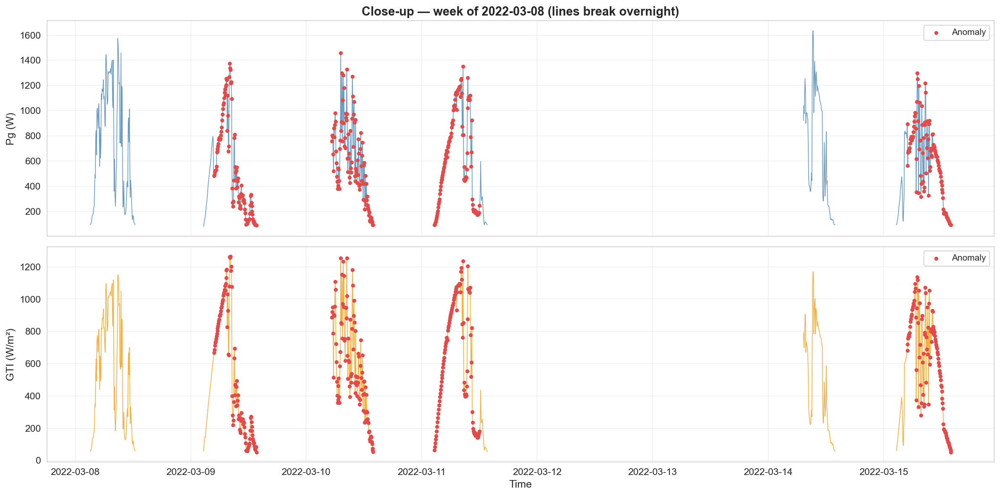
Zooming to a week shows the day/night cycle and, more importantly, that night is simply absent from the record: consecutive rows can be five minutes apart or twelve hours apart. Any operation walking consecutive rows would silently build an evening-to-morning transition that never happened. This is where the seven-minute gap rule was introduced; it reappears in the episode segmentation, the rolling features, the LSTM sequence builder, and the streaming buffer of the deployed consumer.
When faults happen
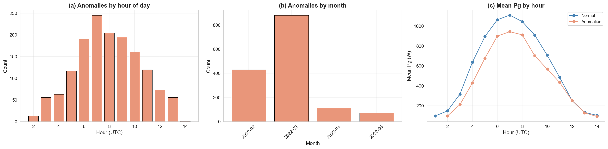
Anomalies concentrate in daylight, peaking around 07:00 UTC, and cluster in February–May 2022 with a strong March peak. The right-hand panel is the useful one: at every hour of the day, anomalous power sits below normal power. The deficit is present regardless of the sun's position, confirming that a sun-normalised yield, rather than raw power, is the right quantity to model.
Study period and incidents
Following the exploration, the record was restricted to the period that actually contains faults: 28 October 2021 to 26 May 2022. That is 18,057 rows, 34.1% of the cleaned dataset, containing all 1,494 anomalies. The 34,903 rows dropped contain exactly zero.
Faults are episodes, not points
Within that window the anomalies group into 17 contiguous incidents. They are not scattered outliers: each is a run of degraded measurements with a beginning and an end, lasting from six minutes to 78 hours.
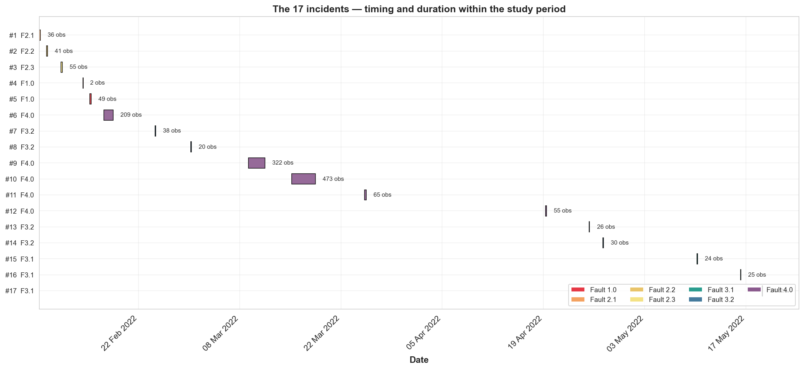
| Type | Incidents | Duration range |
|---|---|---|
| 4.0: intermittent shading | 5 | 4.5 h – 78.8 h |
| 3.2: partial shading | 4 | 1.6 h – 3.1 h |
| 3.1: partial shading (test only) | 3 | a few hours |
| 2.1 / 2.2 / 2.3 | 3 | 2.9 h – 4.5 h |
| 1.0: uniform shading | 2 | 6 min and 4.7 h |
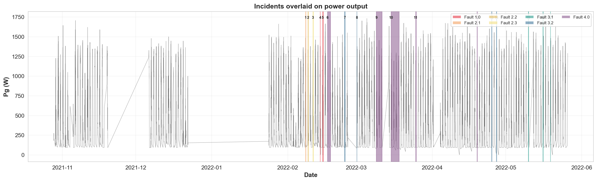
Overlaying the incidents on the production curve shows how varied the signature is. Some episodes carve an obvious notch out of the daily curve; others are barely distinguishable from a passing cloud at this scale. That variety is the argument against a single detector: a model tuned to catch abrupt drops will not catch the subtle ones, and the reverse.
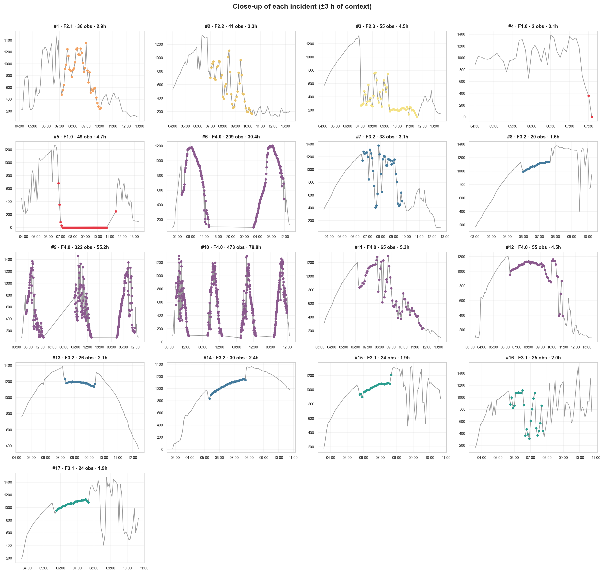
Zoomed one by one, two families appear. Type 4 episodes are jagged: the shading comes and goes within the episode itself. Type 3 episodes are smooth depressions maintained over hours. A point-wise model can catch the first family; the second is what motivated adding a sequence model, since any single point inside a smooth depression looks unremarkable and only the trajectory is abnormal.
Episode-level evaluation
Because faults are episodes, point metrics alone misrepresent operational value. An incident lasting forty measurements and caught on the third is an operational success, even though thirty-seven points were "missed". Every model in this project is therefore scored twice: at point level, and at episode level.
Show code: episode segmentation
def decouper_episodes(index, y):
"""Contiguous anomaly blocks, never spanning a night (gap > 7 min)."""
ruptures = np.flatnonzero((index.to_series().diff() > pd.Timedelta("7min")).values)
bornes = [0, *ruptures.tolist(), len(index)]
eps = []
for a, b in [(a, b) for a, b in zip(bornes[:-1], bornes[1:]) if b > a]:
k = np.flatnonzero(np.diff(np.r_[0, y[a:b], 0]) != 0)
eps += [(a + s, a + f) for s, f in zip(k[::2], k[1::2])]
return eps
The function finds block boundaries by differencing a padded label vector, which is
why the zeros appear on both sides of y[a:b]: padding turns "the series
starts inside an anomaly" into an ordinary transition instead of a special case. The
night rule is applied first, so an episode can never be reported as spanning an
overnight gap. An incident then counts as detected if at least one of its points
crosses the threshold, and the delay to that first crossing is recorded in
five-minute steps.
The chronological split
With incidents identified, the split becomes a constraint satisfaction problem
rather than a call to train_test_split.
A random split would place the first half of an incident in training and the second half in test. The model would then be evaluated on a fault whose neighbouring minutes it had already memorised, and would score beautifully for reasons unrelated to detection. The split is therefore strictly chronological, and, further, the cut points are constrained to fall on days no incident touches. Of the 155 days in the study period, 23 are occupied by an incident; the 132 remaining days are the only legal cut positions.
Show code: choosing cut points on incident-free days
def cutoff_libre(cible):
"""Day closest to `cible` (as a share of observations) that is NOT inside an incident."""
idx_cible = int(np.argmin(np.abs(cumul.values - cible)))
for delta in range(0, len(jours)):
for j in (idx_cible - delta, idx_cible + delta):
if 0 <= j < len(jours) and jours[j].date() not in jours_incidents:
return jours[j].date()
raise ValueError("No incident-free day found")
# cut_train: COMPUTED, nearest free day to 60% of observations
cut_train = cutoff_libre(0.60)
# cut_val: CHOSEN BY HAND, and stated as such.
# cutoff_libre(0.80) would return 2022-04-23, pushing the two Fault 3.2 incidents
# of 25 and 27 April into the TEST set. Test would then contain 3.1 AND 3.2, and
# would no longer measure generalisation to a fault type NEVER SEEN, which is the
# central claim of the final section. The cutoff is pushed to 2022-04-28 to keep
# both 3.2 incidents in validation. This is a PROTOCOL constraint, not a measured
# optimum, and it is recorded in data/split_meta.json.
cut_val = pd.Timestamp("2022-04-28").date()
assert cut_train not in jours_incidents, "cut_train falls inside an incident"
assert cut_val not in jours_incidents, "cut_val falls inside an incident"This block is the one I would show first if asked what the project's methodology looks like. The search expands symmetrically outward from the target percentage until it finds a legal day, so the split is as close to 60/20/20 as the incident structure allows rather than exactly on it. And the second cutoff is set manually, with the reason written into the code, not into a report. Left automatic, it would have pushed the two type-3.2 incidents into the test set, and the final evaluation would have measured something weaker. Both cutoffs are then subject to the same assertion, whether they were computed or chosen.
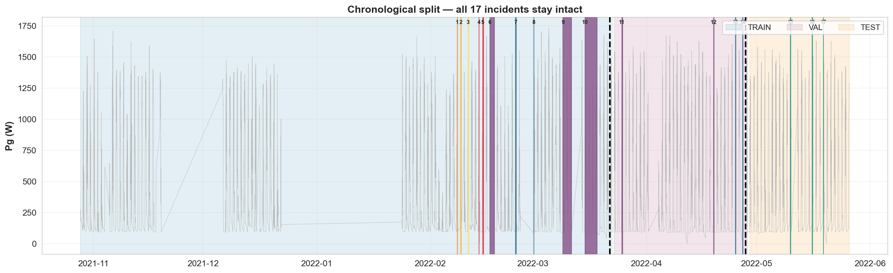
| Partition | Rows | Share | Anomalies | Period |
|---|---|---|---|---|
| Train | 10,863 | 60.2% | 1,245 (11.5%) | 2021-10-28 → 2022-03-22 |
| Validation | 4,219 | 23.4% | 176 (4.2%) | 2022-03-23 → 2022-04-28 |
| Test | 2,975 | 16.5% | 73 (2.5%) | 2022-04-29 → 2022-05-26 |
The verification that matters: zero incidents cut across a boundary. Note also that the training partition contains 1,245 anomalies and that none of them is used: training runs on the 9,618 healthy training points only. The anomalies in the training window are simply discarded, which is what "trained on healthy data" has to mean in practice.
One property of this split is uncomfortable and was kept deliberately: the three test incidents are all of type 3.1, a type appearing nowhere in training or validation. The final evaluation is therefore on a sub-type absent from development. The limit is that 3.1 (shading on one third of a module) is the smaller version of 3.2 (two thirds), which is in validation: the test measures a familiar signature at a new intensity, not a new family of faults.
Feature engineering
The raw sensors describe the plant's state; they do not describe whether that state is normal for the conditions. A power of 3 kW is excellent at dawn and alarming at noon. This section builds variables carrying that comparison internally and, more importantly, validates each one by its effect on detection rather than by how sensible it sounds.
Phase 1: four physical indicators
Show code: the four Phase 1 features
# day segments: a break as soon as a gap > 7 min appears
_seg_jour = (df.index.to_series().diff() > pd.Timedelta("7min")).cumsum()
# (1) instantaneous yield: power produced per unit of irradiance
df["ratio_pg_gti"] = df["Pg"] / df["GTI"].replace(0, np.nan)
# (2) panel heating above ambient air
df["delta_tpv_ta"] = df["TPV"] - df["TA"]
# (3) temporal variation of power, first difference WITHIN a day segment
df["pg_diff"] = df.groupby(_seg_jour)["Pg"].transform(lambda s: s.diff())
# (4) local instability of the yield: 6-point (30 min) rolling std, per segment
df["ratio_std_30min"] = (
df.groupby(_seg_jour)["ratio_pg_gti"]
.transform(lambda s: s.rolling(6, min_periods=2).std())
)
Every rolling operation is wrapped in a groupby(_seg_jour). Without it,
diff() on the last measurement of a day would subtract the first
measurement of the next morning: a twelve-hour jump reported as a five-minute
variation, and a spectacular false anomaly every single evening. The
replace(0, np.nan) on irradiance serves the same purpose: it turns a
division by zero into an explicit missing value rather than an infinity that
propagates silently through everything downstream.
Each candidate was then scored by a Kolmogorov–Smirnov test measuring how far apart the healthy and faulty distributions sit.
| Feature | KS (all faults) | KS (type 3) | Decision |
|---|---|---|---|
| ratio_pg_gti | 0.82 | 0.82 | Kept |
| delta_tpv_ta | 0.18 | 0.39 | Dropped |
| ratio_std_30min | 0.10 | 0.32 | Dropped |
| pg_diff | 0.08 | 0.22 | Dropped |
Three of the four physically motivated features failed the 0.35 threshold. The thermal gap in particular is the kind of variable that sounds authoritative in a report and carries almost no separation here. Keeping it would have cost nothing visible and quietly diluted the model, which is why the test was run before the model, not after.
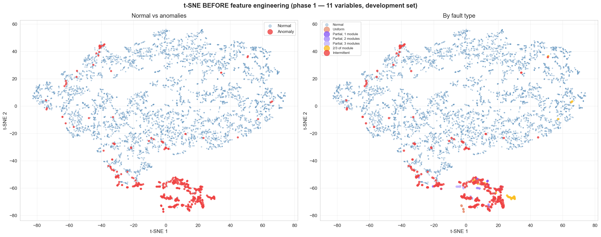
Projected in two dimensions, the anomalies do not yet form a separable region. Some structure exists at the edges, but the bulk of the faulty points sits inside the healthy cloud. Read as a diagnosis rather than a result, this says the feature space is not finished, which is what motivated Phase 2.
Phase 2: seven candidates for the subtle faults
Type 3 faults (smooth partial shading) are the ones the Phase 1 space misses. Seven further candidates were built specifically for them.
Show code: the seven Phase 2 candidates
# every parameter is fitted on HEALTHY TRAINING POINTS ONLY
train_normal = train[train["Fault"] == 0.0] # 9,618 points
# power residual: what the plant should produce at this irradiance, minus what it does
lr = LinearRegression().fit(train_normal[["GTI"]], train_normal["Pg"])
CANDIDATES["pg_residual"] = df["Pg"] - lr.predict(df[["GTI"]])
# voltage deviation from the healthy median
_med_va = train_normal["Va"].median()
CANDIDATES["va_deviation"] = (df["Va"] - _med_va).abs()
# yield corrected for the panel's temperature coefficient (-0.4%/°C above 25°C)
CANDIDATES["efficiency_corrigee"] = (
df["Pg"] / (df["GTI"] * (1 - 0.004 * (df["TPV"] - 25))).replace(0, np.nan)
)
CANDIDATES["ratio_ia_gti"] = df["Ia"] / df["GTI"].replace(0, np.nan)
# one-hour rolling yield, and the deviation of the current point from it
CANDIDATES["ratio_mean_1h"] = (
df.groupby(_segments_jour)["ratio_pg_gti"]
.transform(lambda s: s.rolling(12, min_periods=1).mean())
)
CANDIDATES["ratio_local_dev"] = df["ratio_pg_gti"] - CANDIDATES["ratio_mean_1h"]
CANDIDATES["vg_va_ratio"] = df["Vg"] / df["Va"].replace(0, np.nan)The first three lines carry the anti-leakage discipline of the whole project. The regression defining "expected power", and the median defining "normal voltage", are both fitted on healthy training points and then applied to the entire dataset. Fit them on everything and the reference would already contain the faults the features are meant to expose; fit them on all of training and they would be contaminated by the 1,245 anomalies in that window. The temperature correction is the one piece of domain physics in the block: silicon loses roughly 0.4% of its efficiency per degree above 25 °C, so a hot panel producing less is not a fault.
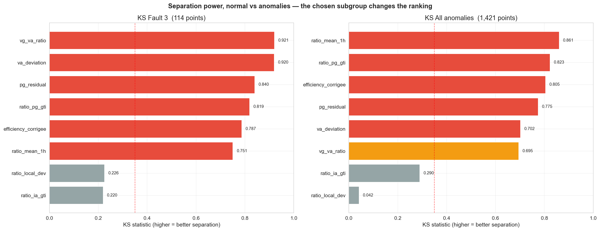
Show code: Kolmogorov–Smirnov ranking
groupes = {
"Fault 3": dev[(dev["Fault"] >= 3.0) & (dev["Fault"] < 4.0)],
"Fault 4": dev[dev["Fault"] == 4.0],
"All anomalies": dev[dev["Fault"] != 0],
}
results = []
for feat in all_test:
n_data = normal[feat].dropna()
ligne = {"Feature": feat}
for nom, grp in groupes.items():
f_data = grp[feat].dropna()
ligne[f"KS {nom}"] = round(stats.ks_2samp(n_data, f_data).statistic, 3)
# second, scale-free reading: median gap expressed in healthy std deviations
ligne["Median gap (σ)"] = round(
abs(n_data.median() - groupes["All anomalies"][feat].dropna().median())
/ n_data.std(), 3)
results.append(ligne)
The KS statistic is used rather than a difference of means because it compares whole
distributions and needs no normality assumption: it is the largest vertical gap
between two cumulative distributions. The second metric exists as a cross-check: KS
saturates near 1 and stops discriminating between very good features, while the
median gap in units of healthy standard deviation keeps separating them. On
va_deviation the two disagree usefully: KS 0.702, median gap 5.6σ,
the largest in the table.
The two rankings in the figure do not agree, and the disagreement is the finding.
vg_va_ratio and va_deviation lead on type 3 faults
(KS 0.921 and 0.920) but fall to sixth and fifth on all anomalies;
ratio_mean_1h leads overall (0.861) and is only third on type 3.
Choosing a winner therefore depends entirely on which subgroup you look at. The
decision was made on the full anomaly set (the subgroup is too small to justify
optimising for it) and this figure is the record of that being a choice rather than
an oversight.
A protocol detail that constrained this whole section: type 3.1 has zero points in the development set. It exists only in the test partition. Features could therefore be designed against type 3.2 but never against 3.1, which is exactly the guarantee needed for the final evaluation to mean anything.
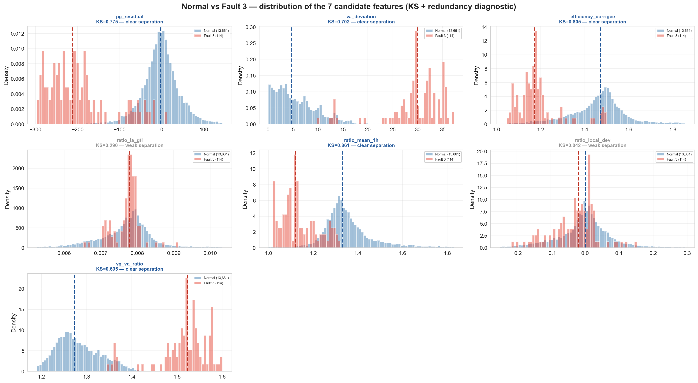
Reading the distributions rather than the KS numbers shows how each feature separates. Some shift their entire mass; others keep the same centre and grow a tail. That difference matters for a reconstruction model, which is sensitive to tails, and less so for a tree-based model, which is sensitive to partitions. Both labels on this figure (the KS cut and the redundancy flag) are computed at run time, not written by hand.
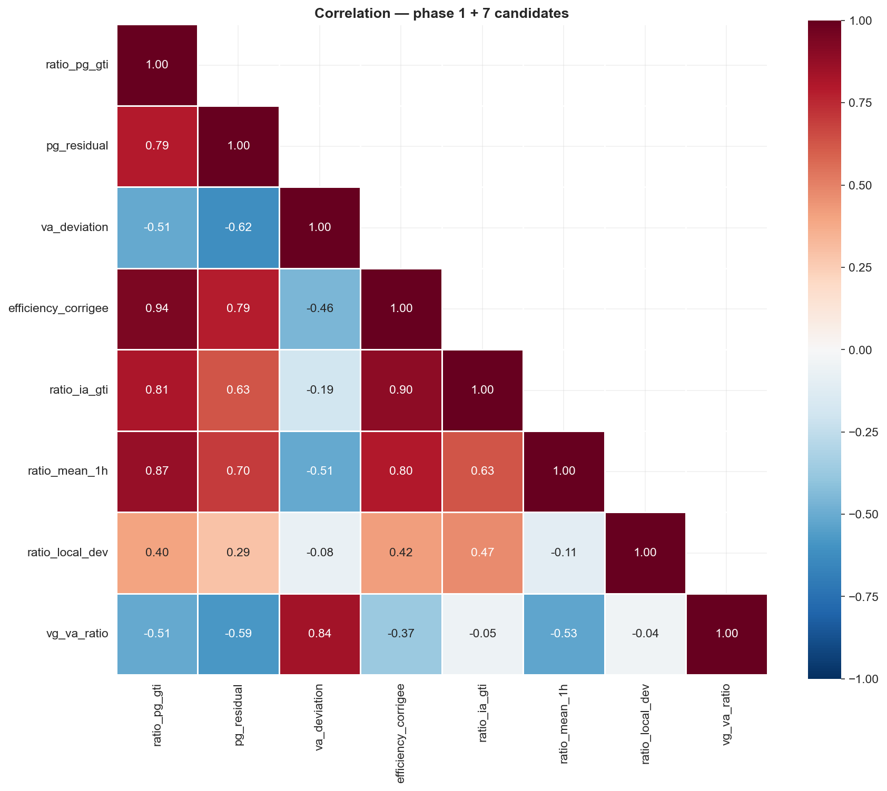
Two pairs are near-duplicates: efficiency_corrigee correlates at 0.944
with ratio_pg_gti (the temperature correction changes less than the
physics suggested) and ratio_ia_gti is essentially a restatement of the
0.978 correlation between current and irradiance. Keeping both members of a pair
would double-weight one physical phenomenon in a model that averages contributions.
Both were dropped in favour of the simpler member.
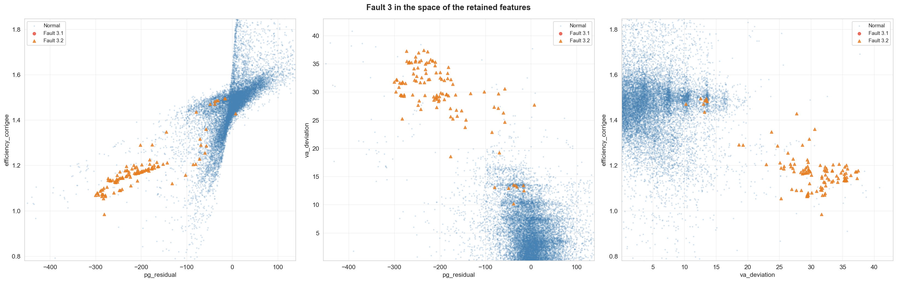
This figure plots development data only. Type 3.1 has no points there, so the figure shows type 3.2 alone and cannot compare the subtypes. Whether the retained features transfer to 3.1 can only be answered on the test partition, at the end.
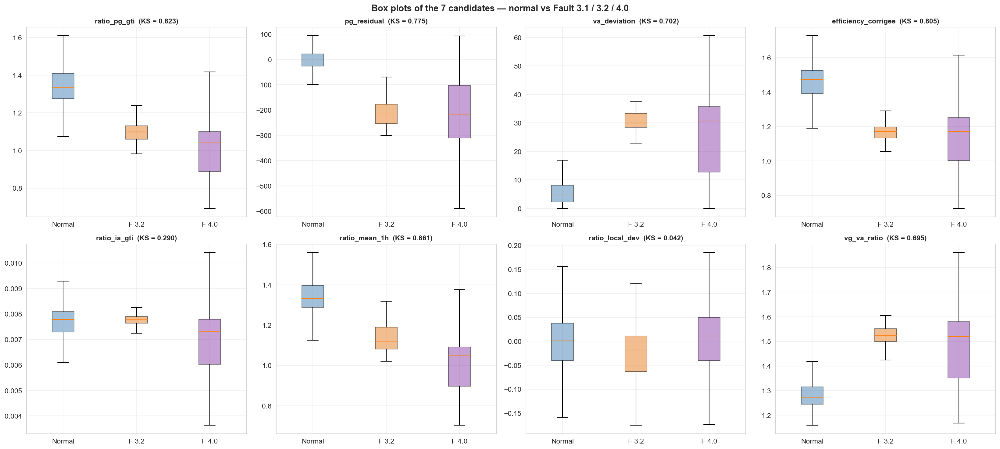
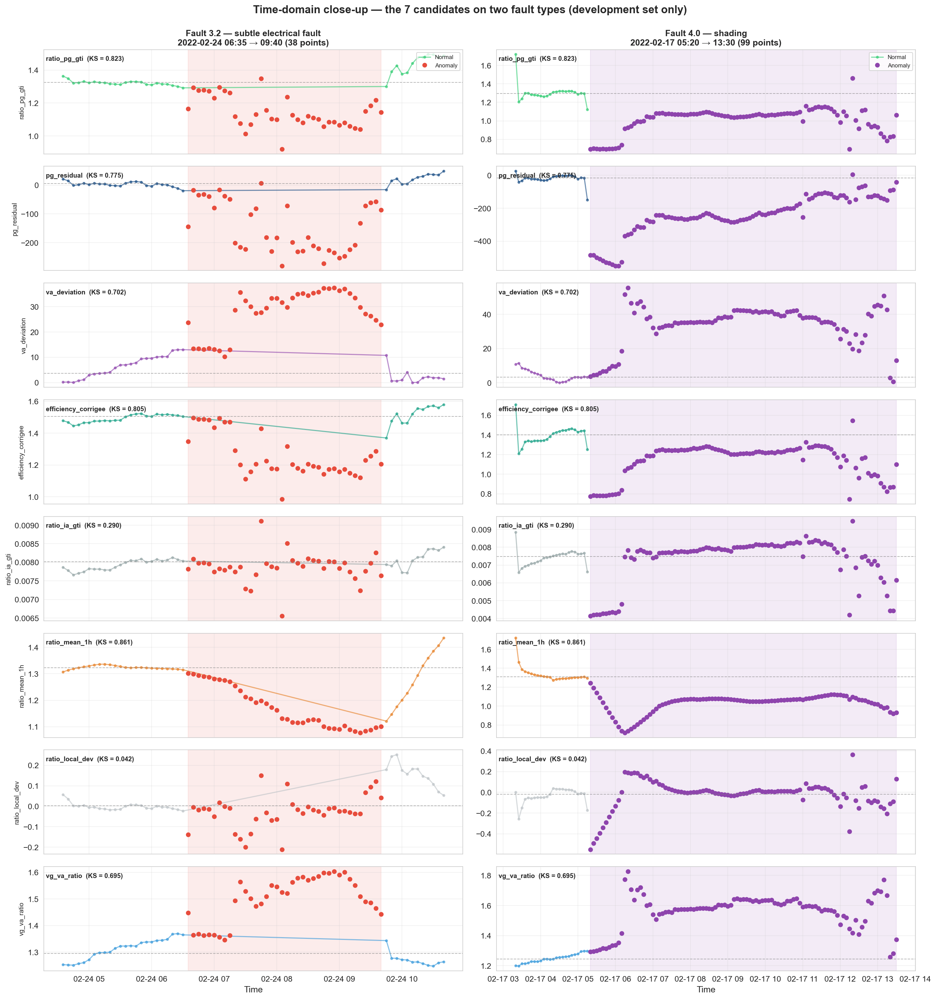
This is the most useful figure of the section. A feature that works should visibly break away inside the shaded fault window, and comparing the two columns shows that no single candidate reacts cleanly to both fault types. One responds to the abrupt family, another to the smooth family, none to both. That observation, made here at feature level, is the earliest justification for the model fusion built seven sections later.
Validating the selection by ablation
KS scores rank features in isolation. They say nothing about how a set of features behaves inside a model. So the selection was settled by ablation: twelve candidate sets, each fed to the same Isolation Forest, scored by PR-AUC on validation, with a guard rail rejecting any set that misses an entire fault episode, regardless of its score.
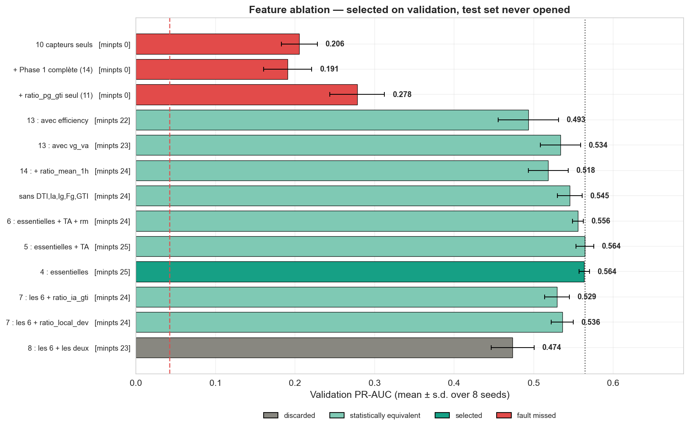
| Feature set | n | PR-AUC (val) | Lift |
|---|---|---|---|
| Ten raw sensors | 10 | 0.206 ± 0.022 | ×4.9 |
| Sensors + all Phase 1 | 14 | 0.191 ± 0.030 | ×4.5 |
| Sensors + ratio_pg_gti | 11 | 0.278 ± 0.034 | ×6.6 |
| Reduced sensor set | 10 | 0.545 ± 0.016 | ×12.9 |
| Four engineered features | 4 | 0.564 ± 0.006 | ×13.3 |
| The four + ratio_ia_gti | 7 | 0.529 ± 0.016 | ×12.5 |
| The four + both rejected | 8 | 0.474 ± 0.027 | ×11.2 |
Four features beat fourteen by a factor of three. The engineered variables do not merely add information: they let the model stop looking at ten raw channels whose variation is dominated by the sun rather than by the plant's health. Note the standard deviations too: the four-feature set is not only the best, it is the most stable across seeds (±0.006 against ±0.030), which matters more than the mean when a single model will be deployed. Adding a rejected candidate back in costs 0.035 PR-AUC, confirming the redundancy analysis quantitatively.
The retained set is pg_residual, ratio_pg_gti,
va_deviation and vg_va_ratio. One audit was run before
freezing it: va_deviation reaches values up to 181, far beyond its
median of 5.4, which would normally signal a broken sensor. Of the 53 points above
the 99.9th percentile, 52 are labelled anomalies. The extreme values are the signal.
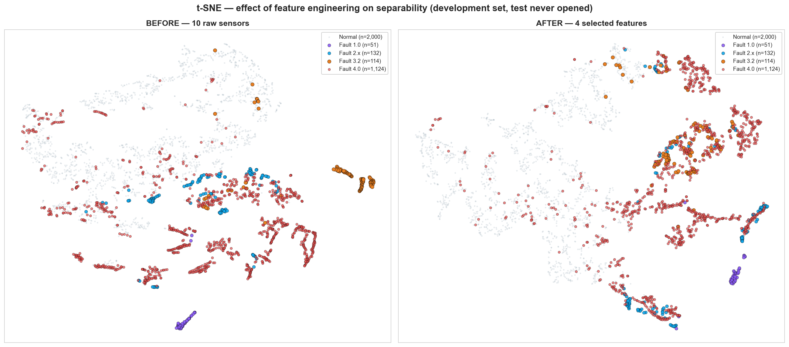
Left, ten raw sensors: anomalies dispersed through the healthy mass. Right, four engineered features: coherent anomalous regions. The caveat is stated in the notebook and repeated here: t-SNE is stochastic and does not preserve global distances, so this is an intuition aid, not evidence. The evidence is the ablation table above; this is what that ablation looks like.
Normalisation and leakage
A short section with consequences out of proportion to its length. Two normalisation strategies were compared, and they differ only in what the scaler is fitted on.
Show code: two scalers, two framings
# healthy subset of the training partition, the basis of the Novelty framing
train_sain_c = train_c[train_c["Fault"] == 0]
scaler_novelty = StandardScaler().fit(train_sain_c[FEATURES_IF]) # healthy only
scaler_outlier = StandardScaler().fit(train_c[FEATURES_IF]) # whole training set
X = {
"Novelty": {
"fit": scaler_novelty.transform(train_sain_c[FEATURES_IF]),
"val": scaler_novelty.transform(val_c[FEATURES_IF]),
"test": scaler_novelty.transform(test_c[FEATURES_IF]),
},
"Outlier": {
"fit": scaler_outlier.transform(train_c[FEATURES_IF]),
"val": scaler_outlier.transform(val_c[FEATURES_IF]),
"test": scaler_outlier.transform(test_c[FEATURES_IF]),
},
}
# in BOTH cases val and test are only transformed, never fitted:
# no validation or test statistic leaks into the normalisation
The whole comparison is two lines apart, and the structure makes the guarantee
visible: fit appears exactly twice in the block, both times on training
data, and transform everywhere else. Under the novelty framing the model
learns a pure normality and measures every new point against it; under the outlier
framing it learns a mixture and only assumes anomalies are rare. Novelty is also the
framing that matches deployment, since a plant in service produces a healthy baseline
first and faults later. It was still measured rather than assumed: the next section
quantifies the gap at more than a factor of two.
Leakage guards were made explicit and asserted in code rather than trusted: train strictly precedes validation, which strictly precedes test; the scaler sees healthy training rows only; no statistic computed on validation or test ever flows back into a fitting step. In a project where the model never sees a label, leakage is the failure mode hardest to notice: an unrealistically good score looks like success.
Isolation Forest
Before any neural network, a baseline. Isolation Forest isolates unusual points by random partitioning: an outlier needs fewer splits to separate from the rest. It assumes nothing about distribution shape and trains in seconds, which makes it the right instrument for testing the feature set, and, as it turned out, for testing the framing.
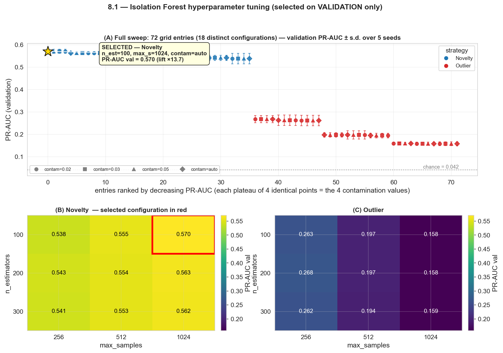
Two results, one expected and one not. The expected one: novelty framing reaches
0.570 PR-AUC against 0.268 for outlier framing, more than double, confirming the
previous section quantitatively. The unexpected one: the contamination
parameter has no effect whatsoever. Maximum PR-AUC spread across all its
values, at fixed tree parameters, is 0.000000, so the 72-point grid contains only 18
distinct configurations. Contamination only moves scikit-learn's internal decision
boundary, and PR-AUC reads the ranking, not the boundary. Reporting the grid as 72
configurations would have overstated the search fourfold.
Show code: final model and its decision threshold
if_final = IsolationForest(
n_estimators=int(_cfg_if.n_estimators),
max_samples=int(_cfg_if.max_samples),
contamination=_cont,
random_state=42, n_jobs=-1,
).fit(X[STRAT_BEST]["fit"]) # healthy training points only
# anomaly score = -score_samples : larger means more abnormal
score_fit = -if_final.score_samples(X[STRAT_BEST]["fit"])
score_val = -if_final.score_samples(X[STRAT_BEST]["val"])
# threshold = 99.5th percentile of the FITTING scores
# (defined on the fitting set, never on val/test -> no leakage)
SEUIL = float(np.quantile(score_fit, 0.995))
Two choices are encoded here. The sign flip on score_samples makes the
score increase with abnormality, so that every detector in the project shares one
orientation and can be compared and fused later without a mental inversion. And the
threshold is a quantile of the fitting scores, not of the validation
scores: it answers "how unusual would this be for a healthy plant?" using only data
the model was allowed to see. The same principle, applied to the fused system, later
becomes the frozen rank reference.
Choosing an operating point
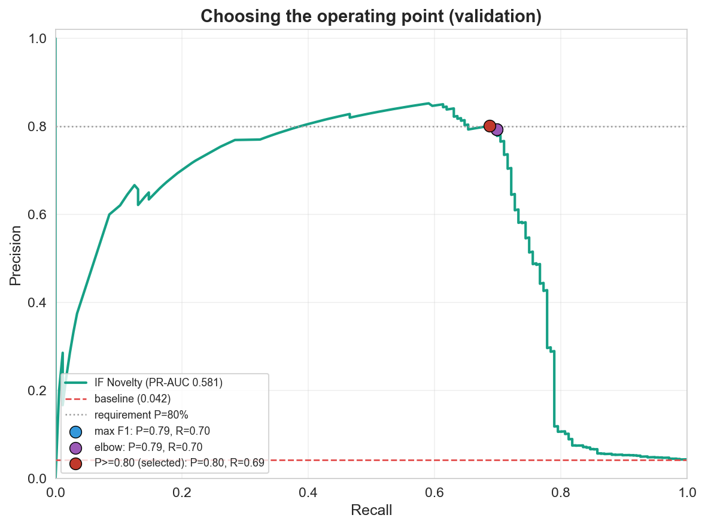
Maximum F1 and the elbow criterion select the same threshold, 0.7476, at precision 0.794 and recall 0.699. The retained criterion (highest recall subject to precision ≥ 0.80) gives 0.7515, trading 0.011 of recall for the guarantee that four alarms in five are real. All three land within 0.004 of each other, which is itself worth knowing: on this detector the criterion barely matters. On the fused system, later, it will matter a great deal.
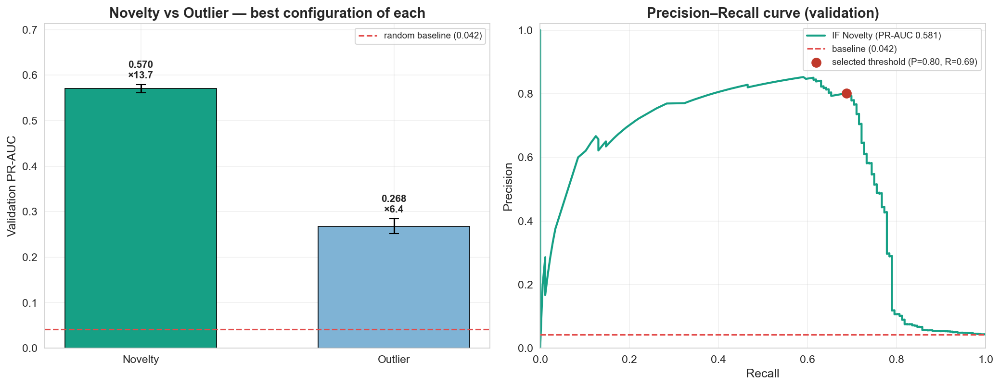
Why the baseline is not in the final system
The Isolation Forest performs respectably: 0.581 PR-AUC, all four validation episodes detected, median delay zero. It was still removed. Every fusion tested later shows the same thing: AE + LSTM scores 0.7234, and adding the forest brings it down to 0.6871. That gap is smaller than the spread between seeds of one identical autoencoder (0.54 to 0.69), and it rests on four validation episodes, so the decision is defensible but not demonstrated. It correlates 0.628 with the dense autoencoder (both judge points in isolation), so it contributes little independent signal while diluting the sequence model's contribution. It remains in the notebook as what it was built to be: a reference point that made the feature ablation possible.
Dense autoencoder
An autoencoder compresses each measurement through a narrow code and rebuilds it. Trained on healthy data only, it becomes good at reconstructing normal operation and bad at reconstructing anything else, so the reconstruction error is itself the anomaly score, with no threshold learned and no label involved.
A result that contradicted the previous section
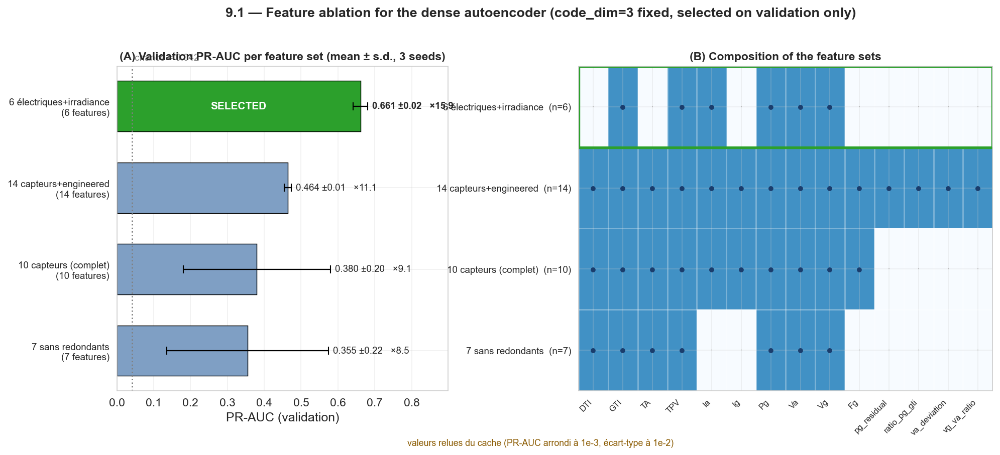
| Feature set | n | PR-AUC (val) | Lift |
|---|---|---|---|
| All ten raw sensors | 10 | 0.380 ± 0.20 | ×9.1 |
| Redundant sensors removed | 7 | 0.355 ± 0.22 | ×8.5 |
| Electrical + irradiance | 6 | 0.661 ± 0.02 | ×15.9 |
| Sensors + engineered features | 14 | 0.464 ± 0.01 | ×11.1 |
The ablation was repeated rather than reused, and it gave a different answer. The
Isolation Forest wanted four engineered features; the autoencoder does best
on six raw sensors, GTI, Pg, Va, Vg, Ia, TPV, and adding the
engineered features on top actively hurts (0.464 against 0.661). The explanation is
structural: an engineered ratio is a relationship between sensors made explicit, and
a reconstruction network learns those relationships itself from the raw channels.
Handing it both the ingredients and the recipe gives it correlated inputs it must
waste capacity reproducing. Reusing the forest's feature set without re-testing would
have cost roughly 0.20 PR-AUC.
Read the standard deviations again: ±0.20 on the ten-sensor set. Those runs disagree with each other almost as much as they disagree with the winner. A single run on that set could have reported anything between 0.18 and 0.58, which is why every line of these ablations is three seeds rather than one.
Hyperparameters
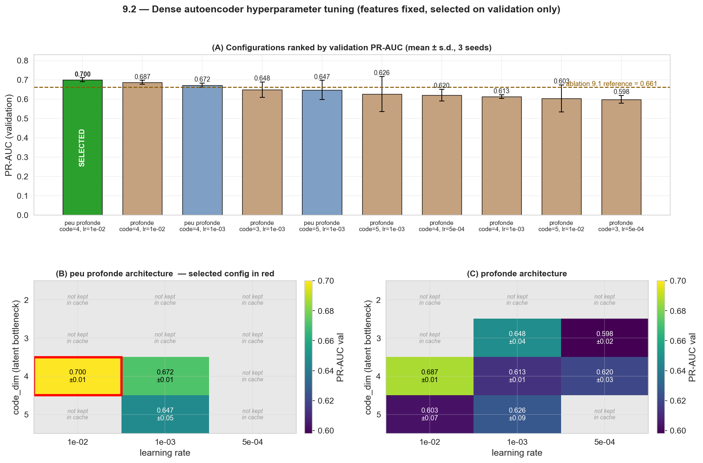
The code dimension dominates: 4 units in the bottleneck outperforms both 3 and 5. Too narrow and the network cannot reconstruct healthy operation either: normal points get high errors and precision collapses. Too wide and it reconstructs anomalies just as well as normal points, which is the failure mode specific to autoencoders: a perfect autoencoder is a useless detector. Shallow beats deep throughout, which is unsurprising on six input variables.
Show code: the deployed architecture
# scaler fitted on HEALTHY training rows only
scaler_ae_save = MinMaxScaler().fit(_tr_sain_ae[FEATURES_AE])
Xtr_ae_save = scaler_ae_save.transform(_tr_sain_ae[FEATURES_AE])
def _build_ae_save(seed):
tf.random.set_seed(seed); np.random.seed(seed)
e = keras.Input(shape=(_nf,)) # 6 features in
x = layers.Dense(_AE_CODE_DIM, activation="relu")(e) # bottleneck: 4 units
o = layers.Dense(_nf, activation="sigmoid")(x) # 6 features out
m = keras.Model(e, o)
m.compile(optimizer=keras.optimizers.Adam(_AE_LR), loss="mse")
return m
for s in range(N_ENS): # 5 seeds
m = _build_ae_save(s)
m.fit(Xtr_ae_save, Xtr_ae_save, epochs=200, batch_size=64, validation_split=0.15,
callbacks=[keras.callbacks.EarlyStopping(monitor="val_loss", patience=15,
restore_best_weights=True)], verbose=0)
m.save(f"model_final/ae/ae_{s}.keras")
The network is deliberately tiny: six inputs, four hidden units, six outputs. That is
the point: capacity is the enemy here, because a model able to reconstruct anything
reconstructs faults too and the error stops discriminating. The
sigmoid output pairs with the MinMaxScaler, both bounded to
[0, 1], so the network never has to learn an output scale. And the target is the input
itself (fit(X, X)), which means no label enters the training of this network:
the block contains none.
An ensemble, and a documented discrepancy
A single autoencoder is unstable. Five identical architectures on five seeds gave 0.693, 0.666, 0.537, 0.656 and 0.691: a spread of 0.156 between the luckiest and unluckiest run. Reporting the best would be a choice, not a result. The deployed detector averages the reconstruction errors of all five, reaching 0.6848, ×16.4 over baseline.
The ensemble does not beat its best member (0.6848 against 0.693), and was never expected to. It beats the expected member (the mean of 0.6486 ± 0.0576), which is what you actually get when you train once and deploy. Ensembling trades the chance of a lucky seed for the certainty of avoiding an unlucky one.
One discrepancy is documented rather than hidden. The hyperparameter grid ranks
lr = 1e-2 first, at 0.700 against 0.672 for lr = 1e-3. The
deployed ensemble uses 1e-3. The gap of 0.028 is of the same order as the seed-to-seed
standard deviations on both configurations (0.010 and 0.010 across three seeds each),
and 1e-3 converged far more regularly. An assertion in the notebook compares the
documented learning rate against the one written in the deployed config file and fails
loudly if they ever diverge.
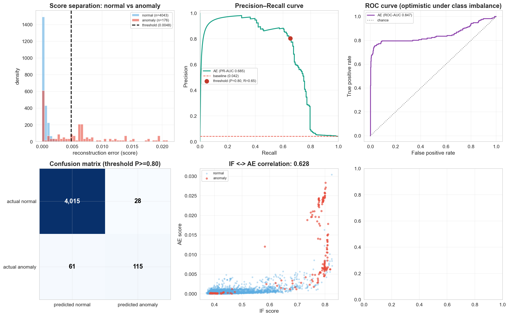
Two panels deserve attention. The ROC curve reads 0.8469 while the PR curve reads 0.6848: the familiar gap on imbalanced data, and the reason ROC appears here with a warning rather than as a headline. And the correlation with the Isolation Forest is 0.628: high enough to confirm the two models see the same phenomena, which is what later made the forest redundant in the fusion.
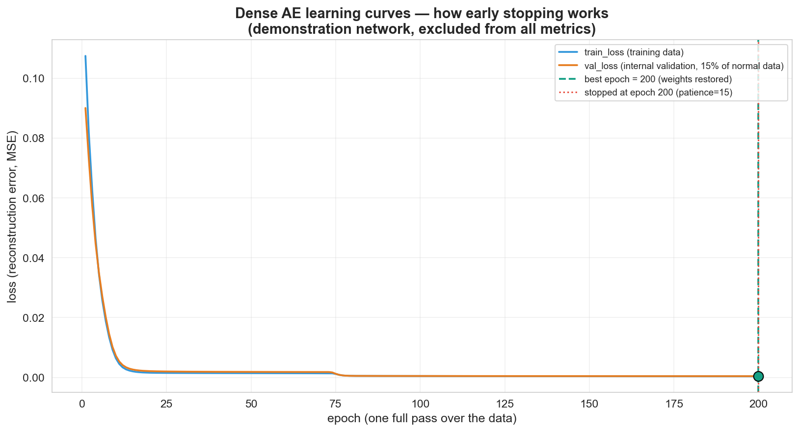
Training and validation losses descend together and stay close (0.00037 against 0.00043 at the end), with no divergence, so the network is not memorising its training set. The best validation epoch is the last one, meaning early stopping never triggered within the 200-epoch budget and the model was still improving when it stopped. A longer budget might lower the loss a little further; that was not tested.
LSTM autoencoder
The dense autoencoder judges each measurement in isolation. That works for abrupt faults and poorly for smooth ones: a slow shading episode is unremarkable at every individual point and abnormal only as a trajectory. The second detector therefore reconstructs sequences instead of points: an LSTM encoder compresses a window of consecutive measurements into a latent code, and an LSTM decoder rebuilds the window.
Show code: sequence builder with the night rule
def fabriquer_sequences(df_partition, features, seq_len, gap_min=7):
"""
Cut one partition into sliding windows of length seq_len, WITHOUT spanning a
night (break as soon as a gap > gap_min appears). To be called on ONE partition
at a time: that is what guarantees no window crosses a train/val/test boundary.
Returns:
- X_seq : array (n_sequences, seq_len, n_features)
- idx_fin : timestamp of the LAST point of each window (used to align the
score at point level and to retrieve the label)
"""
X_list, idx_list = [], []
seg = (df_partition.index.to_series().diff() > pd.Timedelta(f"{gap_min}min")).cumsum()
for _, bloc in df_partition.groupby(seg):
vals = bloc[features].values
n = len(bloc)
if n < seq_len:
continue # segment too short to produce a single window
for start in range(n - seq_len + 1):
X_list.append(vals[start:start + seq_len])
idx_list.append(bloc.index[start + seq_len - 1])
return np.array(X_list), pd.DatetimeIndex(idx_list)Three guarantees are enforced by structure rather than by checking afterwards. Windows are built per day segment, so none straddles a night. The function is called on one partition at a time, so none straddles a train/test boundary: the leak that would be invisible in the metrics and fatal to their meaning. And each window is labelled by its last point, never its middle: a window ending at time t contains only information available at t, which is what makes the same code usable in the streaming consumer. Short segments are skipped, which is why 1,209 healthy training points are lost at segment edges: the price of not fabricating transitions that never happened.
Viability first
Before investing in a hyperparameter search, one question: does a sequence model see anything the point models miss? A first LSTM at 60-minute windows scored a disappointing 0.398 PR-AUC, well below the Isolation Forest's 0.581 and the autoencoder's 0.685.
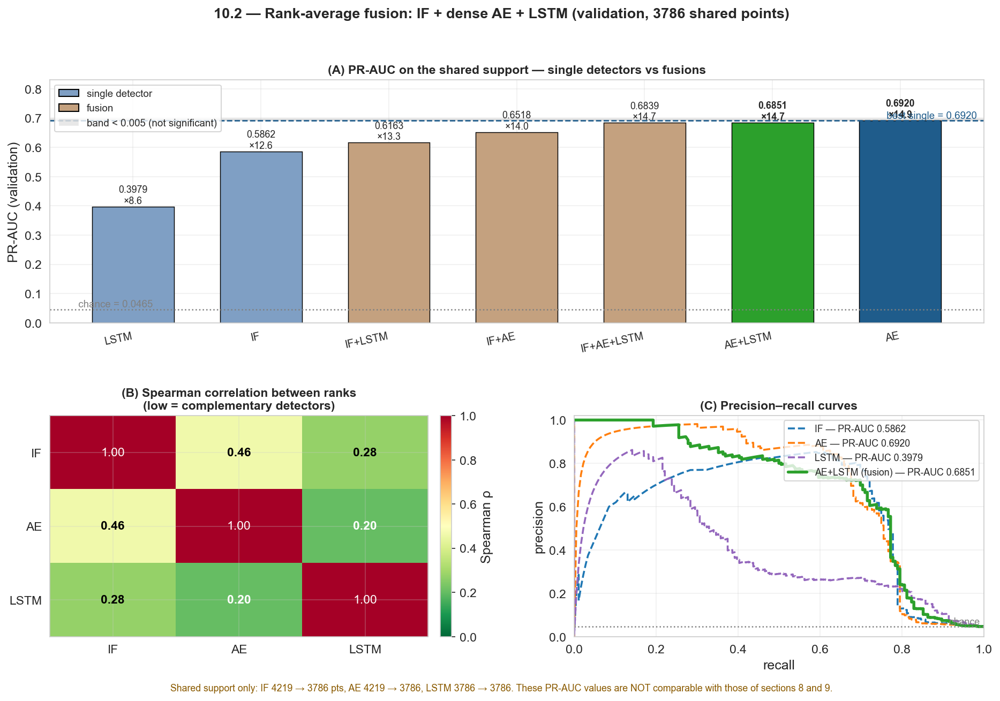
This figure records a negative result that was kept rather than deleted. On the 3,786 common points, the best fusion (AE + LSTM, 0.6851) is worse than the best single detector (AE alone, 0.6920). Fusion was not paying off. But one number justified continuing: the best fusion with the LSTM scores 0.6851 against 0.6518 for the best fusion without it. The LSTM was contributing something real while being individually weak, and the correlations confirmed it, at 0.482 with the forest and 0.581 with the autoencoder, both well below the 0.628 the two point-wise models share. That is what justified the tuning that follows, and it is the moment the project could have taken the wrong turn.
Phase A: which lever actually matters
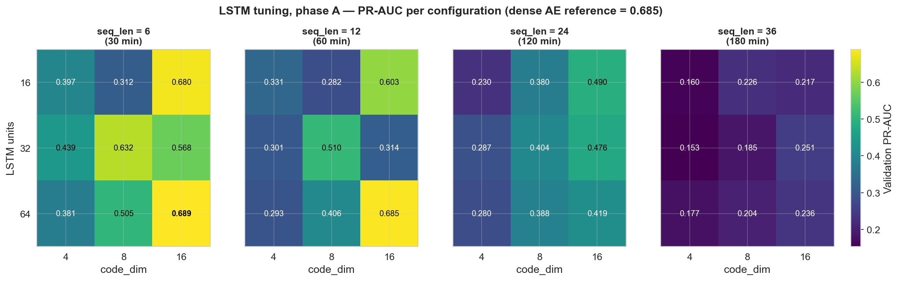
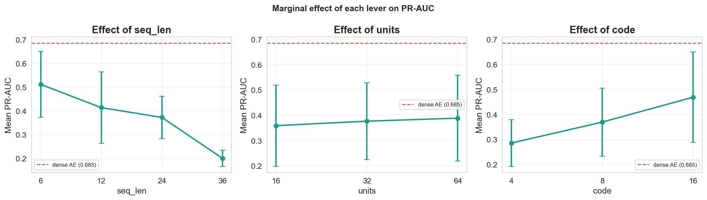
The second figure is the one worth reading. Taking the median PR-AUC across every configuration sharing a lever value isolates each lever's effect: sequence length spans 0.301 between its best and worst value, code dimension 0.193, and the number of units only 0.063. Shorter windows win decisively: a median of 0.505 at six steps against 0.204 at thirty-six. A long window dilutes a localised anomaly across many normal steps and loses points at every segment boundary. The best configuration reaches 0.6891, and three configurations hit the 400-epoch ceiling without early stopping, so their scores are flagged as underestimates rather than quietly ranked.
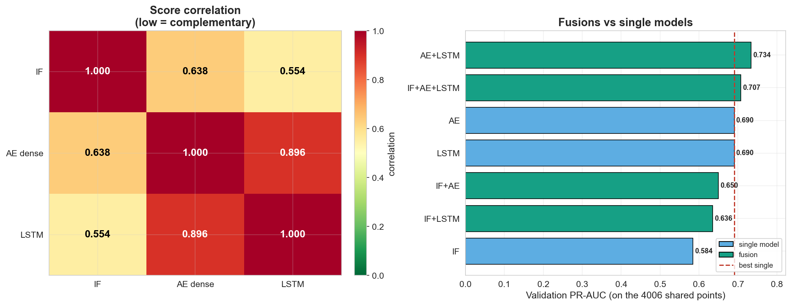
With a properly tuned LSTM the picture inverts: fusion now beats the best single detector, 0.7341 against 0.6903, a gain of +0.0438. But the correlation panel raises a flag: the tuned LSTM correlates 0.896 with the dense autoencoder, against 0.581 for the untuned one. Tuning made it stronger and, simultaneously, more redundant. The fusion still gains, so the two are not interchangeable, but the margin narrowed with every point of performance added.
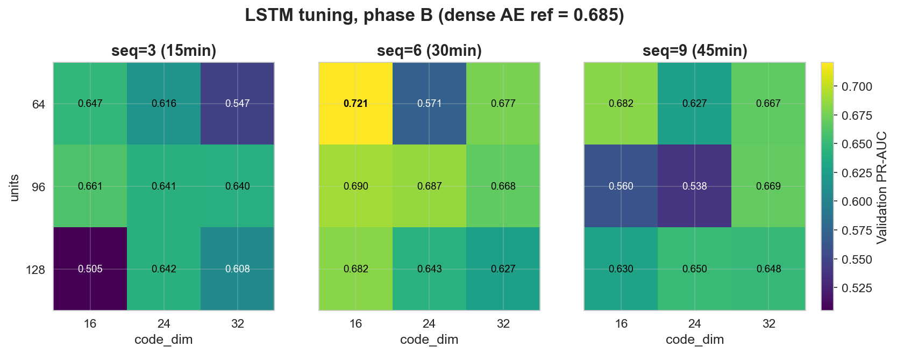
Phase B searched around the Phase A winner and confirmed it: six steps, 64 units, code dimension 16, at 0.7205. Everything nearby is worse: 96 units gives 0.6904, 128 gives 0.6823, nine steps gives 0.6821. A plateau would have been comfortable; a sharp peak means the configuration is a real optimum on this data, and also that it may not transfer to a plant with a different sampling rate.
Show code: the deployed sequence architecture
def _build_lstm_save(seed):
tf.random.set_seed(seed); np.random.seed(seed)
e = keras.Input(shape=(_LSTM_SEQ, _nf)) # (6 steps, 6 features)
x = layers.LSTM(_LSTM_U, activation="tanh", return_sequences=False)(e) # encode -> 64
x = layers.Dense(_LSTM_C, activation="relu")(x) # latent code -> 16
x = layers.RepeatVector(_LSTM_SEQ)(x) # re-spread over time
x = layers.LSTM(_LSTM_U, activation="tanh", return_sequences=True)(x) # decode
o = layers.TimeDistributed(layers.Dense(_nf, activation="sigmoid"))(x) # rebuild each step
m = keras.Model(e, o)
m.compile(optimizer=keras.optimizers.Adam(3e-3), loss="mse")
return m
RepeatVector is the hinge of this architecture. The encoder collapses the
whole window into a single 16-number code, discarding its time axis; the decoder has
to rebuild six time steps from that code alone. Copying the code six times and letting
the decoder LSTM differentiate them forces the latent representation to carry the
window's shape, not just its average level. That is precisely what a slow
shading episode corrupts, and what a point-wise autoencoder cannot see.
The deployed ensemble
As with the dense autoencoder, five networks on five seeds rather than one. Members score 0.600, 0.676, 0.598, 0.639 and 0.645 (mean 0.6316 ± 0.0294), and the ensemble reaches 0.6583.
Here the ensemble is a deliberate step backwards on paper. The single tuned LSTM scored 0.6903, and fusing it with the autoencoder gave 0.7341; the ensemble gives 0.6583 and fuses to 0.7234. Roughly one hundredth of PR-AUC was traded for a detector whose behaviour does not depend on a seed drawn once. The single model's 0.6903 is a sample from a distribution with a 0.029 standard deviation; the ensemble's 0.6583 is what the system delivers every time it is rebuilt. On a system meant to run unattended, the second number is the one that can be promised.
Fusion
Two detectors that fail on different things are worth combining, but their scores are not comparable. Both are reconstruction errors, computed on different quantities, living at different magnitudes: the autoencoder's validation errors have a median of 0.000297, the LSTM's 0.000106. Averaging them raw lets the larger scale decide every alarm.
The fix is to stop comparing the two scores to each other and compare each to a fixed reference of its own. Each detector's raw error is converted into its rank within a frozen reference vector (that detector's own validation errors), and the two ranks, now both in [0, 1] and both meaning "how unusual relative to a known distribution", are averaged.
Show code: ranking against a frozen reference
def _rang(self, valeurs, reference_triee):
"""Rank within the pre-sorted reference: fraction of reference <= value.
A rank is NEVER recomputed on the current batch, that would be transductive."""
return np.searchsorted(reference_triee, valeurs, side="right") / len(reference_triee)
r_ae = self._rang(err_ae, self.ref_ae) # reference: 4,219 validation points
r_lstm = self._rang(err_lstm, self.ref_lstm) # reference: 4,006 validation sequences
score_fusion = (r_ae + r_lstm) / 2
This is where the streaming constraint from the first section becomes a line of code.
The natural way to rank is rankdata over the batch, but in production the
batch is one point, and its rank among itself is always 1.0, so every measurement would
be an alarm. Ranking against a frozen reference produces a score meaning the same thing
whether it is computed on four thousand points or on one. The reference is sorted once
at load time, so searchsorted makes each scoring a binary search rather
than a re-ranking.
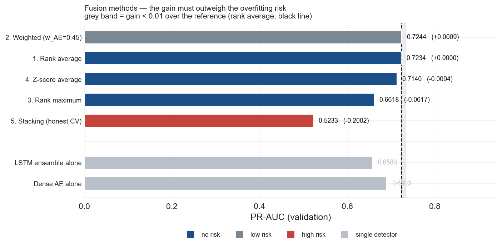
| Method | PR-AUC | Gain | Overfitting risk |
|---|---|---|---|
| Weighted average (w = 0.45 chosen on val) | 0.7244 | +0.0009 | Low but real |
| Rank average | 0.7234 | – | None |
| Z-score average | 0.7140 | −0.0094 | None |
| Rank maximum | 0.6618 | −0.0617 | None |
| Stacking (honest cross-validation) | 0.5233 | −0.2002 | High |
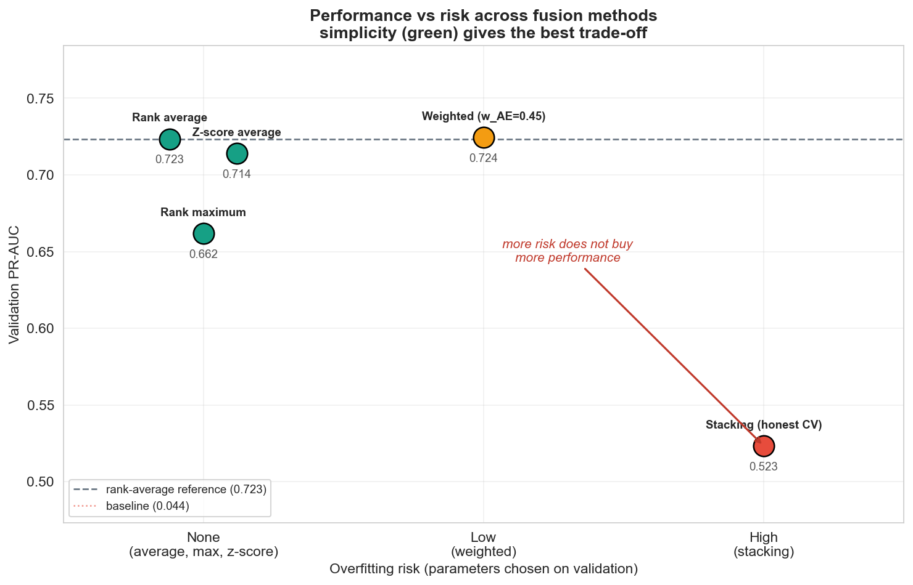
The weighted average wins by 0.0009, and buys that with a weight fitted on the same validation set used to report the number. Plain rank averaging was kept: a nine-ten-thousandths gain does not justify a parameter chosen on the evaluation data. The stacking result is the instructive one: a meta-model, evaluated with honest cross-validation, scores 0.5233, far below both of its inputs. With 176 anomalies to learn from, the meta-model overfits comprehensively. Evaluated dishonestly it would have topped this table, which is precisely why the second axis of this figure exists.
On the common support of 4,006 points, the retained fusion reaches 0.7234 against 0.6903 for the best single detector: +0.0331. That gain is of the same order as seed-to-seed variation and was measured on the same four episodes that chose the method, so it is suggestive rather than significant.
Decision threshold
A fused score is a ranking. Turning it into an alarm requires a cut, and that cut encodes a judgement about the relative cost of the two errors, which the data cannot settle.
On a PV plant the two errors are asymmetric. A false positive sends a technician to check a healthy string; a false negative leaves a fault running for weeks. The threshold is therefore selected by maximising F2 on validation (the F-measure weighting recall twice as heavily as precision) rather than F1, which treats the two as equals.
Show code: selecting the threshold by F2
_prec, _rec, _thr = precision_recall_curve(_y, score_fusion_val)
_prec_t, _rec_t = _prec[:-1], _rec[:-1]
# F2 = (1+4)*P*R / (4*P + R) ; beta=2 weights recall twice as heavily
_beta2 = 2**2
_f2 = (1 + _beta2) * _prec_t * _rec_t / (_beta2 * _prec_t + _rec_t + 1e-9)
_i_f2 = int(np.argmax(_f2))
SEUIL_CANDIDAT = float(_thr[_i_f2]) # 0.9460
The threshold is read off the precision–recall curve rather than searched for, so
every attainable operating point is considered exactly once. The [:-1]
slicing is not cosmetic: precision_recall_curve returns one more
precision and recall value than it returns thresholds (the final point corresponds to
no threshold at all), and forgetting to trim it misaligns the argmax by one position.
The 1e-9 guards the degenerate case where precision and recall are both
zero.
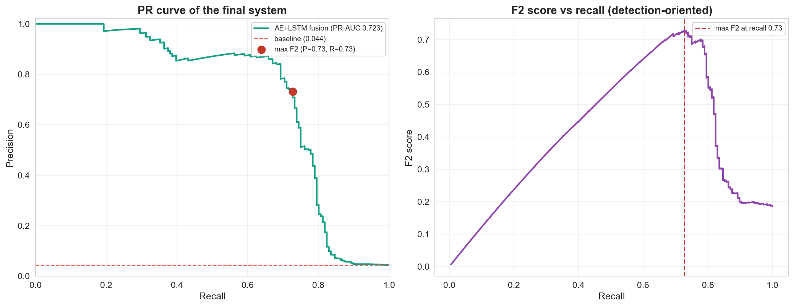
Most test fault points sit just above the threshold: 80% of them score between 0.959 and 0.967, against a threshold of 0.946. Recall therefore depends on a narrow margin. A threshold chosen on other seeds or other data could move the operating point substantially, which is why the threshold must be recomputed together with the references whenever the networks are retrained.
A sensitivity analysis retrained the same architecture with five other seeds (5 to 9) and the same settings, in a separate folder; the deployed models were not changed. References and threshold were recomputed on validation for the new networks, as an update of the system would require. The retrained system selects a threshold of 0.954 (against 0.946), with validation PR-AUC 0.723 and test PR-AUC 0.799 (against 0.723 and 0.777). At its threshold it reaches test recall 0.96 and precision 0.74 (against 0.97 and 0.70), detects all three test episodes, and raises 2.4 false-alarm events a week in the unused months (against 2.6). Its LSTM family alone again scores low on test (0.33). The same seeds, retrained independently on another machine for the external review, gave a threshold of 0.931, test precision 0.53 and 5.1 events a week: training is not bit-reproducible across machines, and the operating point moves with it. Ranking quality is fairly stable (test PR-AUC 0.78 to 0.82 across the three ensembles), but precision ranges from 0.53 to 0.74 and the false-alarm rate from 2.4 to 5.1 events a week. The deployed figures are one realisation of the procedure.
| Criterion | Threshold | Precision | Recall | Missed |
|---|---|---|---|---|
| F2 maximum | 0.9460 | 0.731 | 0.727 | 48 / 176 |
| Recall ≥ 0.80 | 0.8107 | 0.283 | 0.801 | 35 / 176 |
| Recall ≥ 0.85 | 0.4572 | 0.072 | 0.852 | 26 / 176 |
| Recall ≥ 0.90 | 0.2648 | 0.049 | 0.903 | 17 / 176 |
The operating-point table is more informative than the chosen threshold. Pushing recall from 0.727 to 0.801 costs precision 0.731 → 0.283: two thirds of alarms become false. Pushing to 0.85 collapses precision to 0.072, barely above the 0.044 base rate: at that point the detector is flagging almost everything. Recall does not degrade gracefully here, it hits a wall. That is a property of the system, not a tuning decision, and it is the real answer to "why not just set the threshold lower".
Packaging the system
The deployed system is ten networks, two scalers, two reference vectors and one threshold, about 2.8 MB in total, versioned in the repository so that a clone can reproduce every result without retraining anything.
| Artefact | Contents |
|---|---|
ae/ae_0..4.keras | Five dense autoencoders, code dimension 4 |
lstm/lstm_0..4.keras | Five LSTM autoencoders: 6 steps, 64 units, code 16 |
scaler_ae.pkl, scaler_lstm.pkl | Fitted on healthy training rows only |
ref_score_ae.npy, ref_score_lstm.npy | 4,219 and 4,006 frozen validation errors: the rank references |
config.json | Features, hyperparameters, and the 0.9460 threshold |
These artefacts are only meaningful together. Retraining the networks changes the error scale, which invalidates the references, which invalidates the threshold. The notebook makes that dependency explicit: the retraining switch is off by default, and the section that would trigger it states in its own comment that references and threshold must be recomputed immediately afterwards, which the following section then does.
A single class, DetecteurPV, loads those artefacts and exposes one method.
It is defined once in the notebook and ported to src/detecteur.py
for deployment (the port adds a float32 cast and calls each network directly instead of through predict, which is faster and gives the same scores), with the notebook remaining the source of truth. The next section
verifies that the copy behaves identically.
Final validation
This section exists because a saved model is not the same object as the model that produced the numbers above. Everything is reloaded from disk and re-verified before the test partition is opened.
The saved networks reproduce the reported scores
The five reloaded autoencoders, scored on the 4,219 validation points, reproduce the earlier scores with a maximum deviation of 0.00e+00. The five LSTMs do the same on 4,006 sequences. Not "close": bit-identical.
Why the rank references had to be recomputed
The repository also contains two frozen score vectors from an earlier version of the project, which retrained its ensembles on every run. They are kept deliberately, as evidence for a point that is otherwise abstract: a rank reference belongs to the networks that produced it.
| Detector | Median, old reference | Median, deployed | Rank a median deployed point receives |
|---|---|---|---|
| Dense AE | 0.000595 | 0.000297 | 0.243 instead of 0.500 |
| LSTM | 0.000089 | 0.000106 | 0.577 instead of 0.500 |
A perfectly median point from the deployed autoencoder (true rank 0.500) would be scored 0.243 against the old reference, an error of 0.257 on a scale whose alarm threshold is 0.946. Reusing a reference across a retraining would not produce a slightly wrong score; it would produce a systematically deflated one, and the system would go quiet. The notebook asserts at run time that the two references are still distinct, so the demonstration cannot silently rot into a comparison of a thing with itself.
Two independent paths, one score
The score is computed twice by code written independently: once from the models used throughout the notebook, once from the artefacts reloaded from disk. Maximum point-by-point deviation: 0.00e+00 across 4,006 points, with identical PR-AUC to six decimals. Instantiating the deployable class and feeding it the same data gives the same answer again. The streaming path, with its six-point sliding window, is checked outside the notebook, by tests that replay part of the test partition through the consumer's message handling and compare scores and alarms with the batch path.
Validation performance of the final system at the 0.9460 threshold: 128 true positives, 48 false negatives, 47 false positives; 4 of 4 episodes detected, median delay 0 steps.
A guard cell runs immediately before the test is opened, verifying that no test metric has been computed anywhere earlier in the notebook. The test scores exist as arrays from the LSTM section onwards: they were never confronted with their labels. The cell also reports what the test contains: 3 episodes, all of type 3.1, a type absent from every development partition.
The test partition
Opened once, with the threshold already fixed, after feature ablation, hyperparameter search, ensemble sizing, fusion selection and threshold calibration had all been settled on validation.
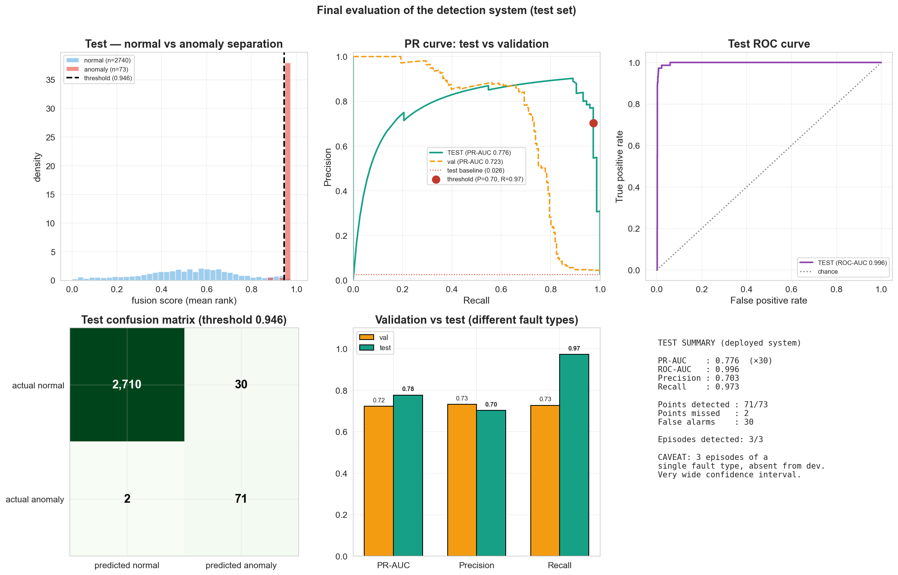
| Metric | Validation | Test |
|---|---|---|
| Points scored | 4,006 | 2,813 |
| Anomaly base rate | 4.4% | 2.6% |
| PR-AUC | 0.7234 (×16.5) | 0.7765 (×29.9) |
| ROC-AUC | – | 0.9964 |
| Precision | 0.731 | 0.703 |
| Recall | 0.727 | 0.973 |
| F2 | 0.728 | 0.903 |
| Episodes detected | 4 / 4 | 3 / 3 |
| Median detection delay | 0 steps | 0 steps |
At the 0.9460 threshold the test confusion matrix reads 71 true positives, 2 false negatives, 30 false positives, 2,710 true negatives. All three episodes were caught. The 10 May episode is detected one measurement after its first point; the other two on their first.
The test recall (0.973) is far above the validation recall (0.727), which is not the usual direction and must not be read as the model improving. The two partitions contain different faults: test carries type 3.1 exclusively, validation carries 3.2 and 4.0. The system happens to be better at the family that landed in the test window. Type 3.1 appears nowhere in development, but it is a near-twin of 3.2, which is in validation and is detected just as well there (recall 0.98). The result is generalisation to a sub-type never used in development, not to a new family of faults, and it is not evidence of tuning paying off. With three episodes, the fair statement is that the point-level metrics are informative and the 3/3 episode score is a small sample.
Validation was used for every design decision: the feature set, the bottleneck size, the learning rate, the fusion method, the removal of the Isolation Forest, the reference vectors and the threshold. The validation scores are therefore optimistic. The test partition is the only unbiased check, and it rests on three episodes.
The three test episodes are one staged experiment repeated. Each starts at 05:45 UTC and lasts about two hours. An exact 95% interval for the episode detection rate after 3 of 3 detections is 0.29 to 1.00. A block bootstrap over test days (10,000 resamples) gives a 95% interval for the test PR-AUC of 0.48 to 0.94, around the point estimate of 0.78.
Simple baselines
The ensemble is the most complex part of the system: ten networks, two reference vectors and a rank fusion. Before accepting that complexity, the same scored points and the same threshold rule were used to test two simple detectors. Neither was part of the original notebook. Both were added afterwards for this comparison.
- kNN: mean distance to the 10 nearest healthy training points, on the six raw sensors after standardisation. No training beyond the scaler.
- Mahalanobis: distance from the healthy mean, using the healthy covariance of the same six sensors.
Each method's threshold is its own F2 maximum on validation. The test results were examined after the thresholds were fixed.
| Method | Validation PR-AUC | Test PR-AUC | Test precision | Test recall | Test episodes | Unused months: events per week |
|---|---|---|---|---|---|---|
| Ensemble (deployed) | 0.723 | 0.776 | 0.70 | 0.97 | 3 of 3 | 2.6 |
| kNN | 0.636 | 0.880 | 0.89 | 0.86 | 3 of 3 | 2.3 |
| Mahalanobis | 0.664 | 0.734 | 0.80 | 0.27 | 3 of 3 | 1.9 |
On validation the ensemble is ahead of kNN (0.72 against 0.64). On test the order reverses (0.78 against 0.88). The two curves cross at a recall of about 0.8.
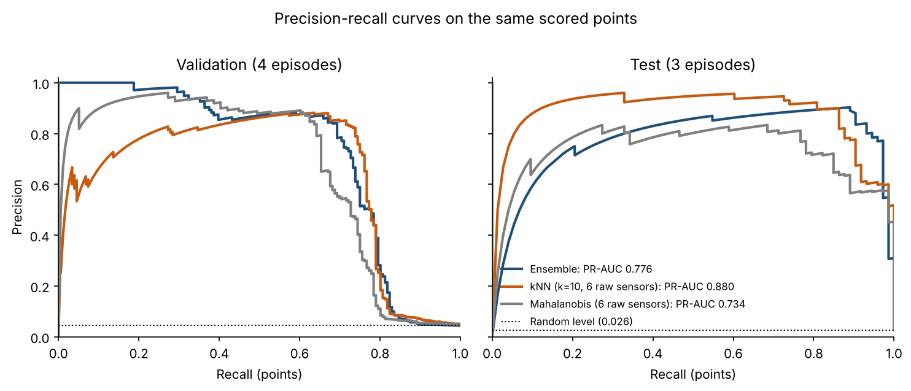
Figure below sweeps the threshold of each method and counts, on the unused months, the false-alarm events per week against the test recall. At about 1 event a week, kNN recalls more test faults. Between about 1.2 and 4 events a week, the ensemble recalls more. The comparison uses hindsight on the false alarms, so it ranks the methods but cannot choose a deployed threshold.
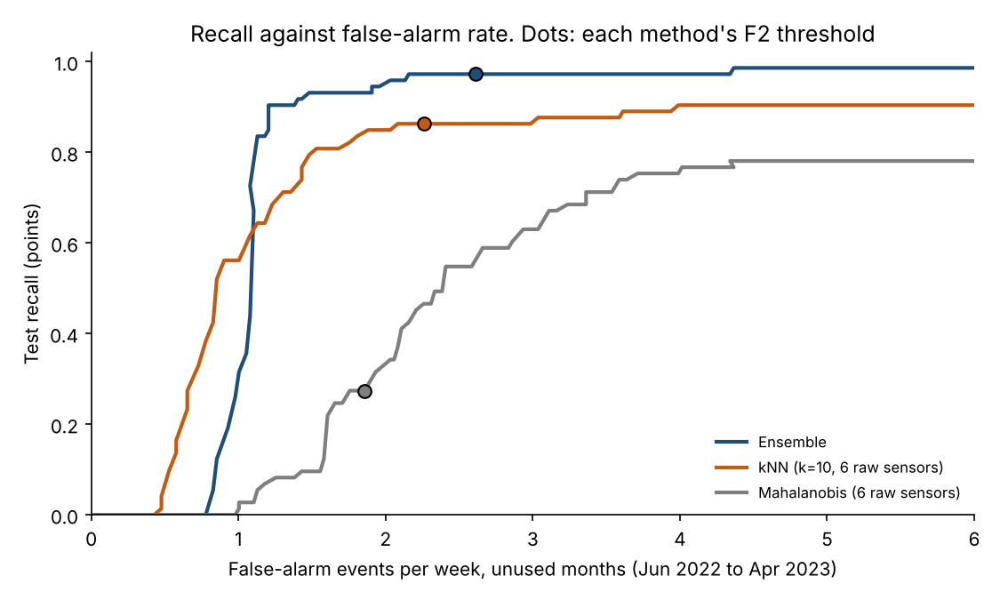
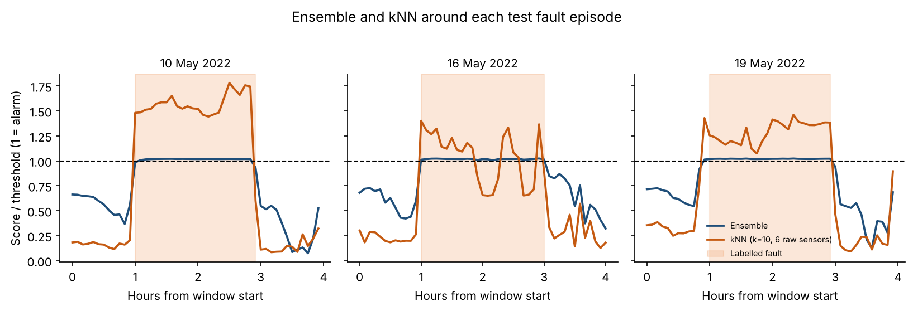
A paired bootstrap over days puts numbers on this. On test, kNN is ahead of the ensemble in 91% of resamples, and the 95% interval of the difference (ensemble minus kNN, −0.32 to +0.04) includes zero. On validation, the ensemble is ahead of Mahalanobis in 97% of resamples, a borderline lead that is also biased in its favour, since validation is the set it was tuned on.
The ensemble's advantage over these simple baselines is therefore not established. On this evidence a nearest-neighbour distance is a credible alternative that needs no training. The design should be judged on a larger set of episodes.
What each family contributes
| Set | Dense autoencoders | LSTM autoencoders | Fusion (deployed) |
|---|---|---|---|
| Validation | 0.690 | 0.658 | 0.723 |
| Test | 0.751 | 0.274 | 0.776 |
On validation each family alone scores close to the fusion. On test, the LSTM family alone scores 0.27, well below the dense family, and the fusion adds about 0.03 to the dense family alone. Most of the test result comes from the dense autoencoders, so the test result is not evidence for the value of temporal modelling.
Evaluation across all 17 incidents
The test partition holds three episodes of one staged experiment: it cannot rank the detectors. The 17 incidents of the study period carry far more information, so the comparison was repeated as a leave-one-incident-out evaluation. The protocol was fixed before the results were seen and was not changed after.
- Folds. One per incident. The incident's days are held out, with a one-day buffer on each side.
- Refitting. Every detector is refitted inside each fold on the healthy points of the other days only (scalers, covariance, networks). Labels are used to exclude known faults from fitting, as everywhere in this project.
- Thresholds without labels. One healthy day in four is kept for calibration; each method alarms above the 99th percentile of its scores on the same calibration points (1% false alarms on healthy data).
- Same points for all. Seven methods, compared on exactly the same held-out points. Results are aggregated over the 17 incidents and over 12 groups, because incidents from the same test campaign are not independent.
| Method | ROC-AUC mean | ROC-AUC min | Incidents detected | Recall mean | False-alarm events / day |
|---|---|---|---|---|---|
| kNN | 0.973 | 0.857 | 17 of 17 | 0.82 | 0.68 |
| Mahalanobis | 0.978 | 0.848 | 17 of 17 | 0.76 | 0.41 |
| Mahalanobis (Ledoit-Wolf) | 0.974 | 0.805 | 16 of 17 | 0.65 | 0.35 |
| Isolation Forest | 0.973 | 0.792 | 17 of 17 | 0.78 | 0.59 |
| Dense AE ×5 | 0.931 | 0.684 | 16 of 17 | 0.70 | 0.41 |
| LSTM AE ×5 | 0.971 | 0.920 | 17 of 17 | 0.77 | 0.88 |
| Fusion (deployed design) | 0.971 | 0.817 | 16 of 17 | 0.76 | 0.29 |
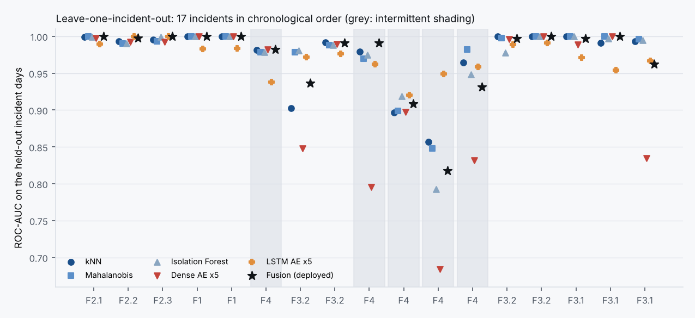
No method differs significantly from kNN. Paired over the 12 groups, the closest call is the dense autoencoder ensemble (Wilcoxon p = 0.016), which becomes p = 0.097 after a Holm correction for six comparisons. These p-values are exploratory: folds share part of their healthy training data, so groups are not strictly independent, and an absence of difference is not evidence of equivalence. No method dominates on every criterion either: kNN has the highest recall, the deployed fusion the fewest false alarms (0.29 a day, a figure that depends on this calibration and protocol). The simple detectors reach these results at a small fraction of the cost: about 1 to 2 ms per point and under a second of fitting, against about 190 ms per point for the fusion and around 30 minutes of fitting per fold for its ten networks.
A hypothesis tested and rejected
On the 17 incidents, the LSTM separates the type 3.1 incidents well (ROC-AUC 0.95 to 0.97), while on the chronological test it had collapsed (PR-AUC 0.27). The first explanation was that the refitted models' healthy reference contained days close to each incident, which the deployed LSTM, trained on October to March, never saw. That explanation compared a PR-AUC with a ROC-AUC over different scopes, so it was tested with the same metric and the deployed models' original predictions.
| Method | PR-AUC within each fault day | PR-AUC, 3 fault days | PR-AUC, all 27 days |
|---|---|---|---|
| kNN | 0.962 | 0.979 | 0.880 |
| Mahalanobis | 0.990 | 0.990 | 0.734 |
| Dense AE ×5 | 0.955 | 0.957 | 0.749 |
| LSTM AE ×5 | 0.702 | 0.684 | 0.264 |
| Fusion (deployed) | 0.996 | 0.997 | 0.776 |
Within each fault day, the deployed LSTM already ranks faults as well as the refitted one (ROC-AUC 0.93 to 0.97 against 0.95 to 0.97): the proximity of the reference does not explain the gap, and the hypothesis is rejected. What the check revealed instead applies to every method. Within a fault day, most detectors are close to perfect; over all 27 days, precision falls sharply, because healthy points of other days, early in the morning or late in the afternoon, score as high as faults. The main difficulty is not ranking a fault against its own day, but separating it from the normal variability of other days: the same problem as the winter false alarms. It also means the leave-one-incident-out results, computed within incident days, are optimistic by construction.
An exploratory follow-up, decided after these results, applied kNN to six-point windows, giving it the LSTM's temporal context without the network. It did not help on intermittent shading (0.918 against 0.936 for point-wise kNN). The LSTM's lead on that type (0.946) rests mainly on one incident, 25 March, and does not show that it is more robust.
Limits of this evaluation: hyperparameters were chosen before it, on a period containing 4 of the incidents (excluding those folds does not change the conclusions, but it is a sensitivity check, not an independent validation); evaluation within incident days is optimistic; the healthy reference includes days before and after each incident, which is not a deployment scenario; all incidents are staged shading on one plant.
Running system
A detector that only exists inside a notebook has not been shown to work on a stream. The second half of the project ports the model into a pipeline that scores measurements one at a time, on infrastructure starting from a single command.
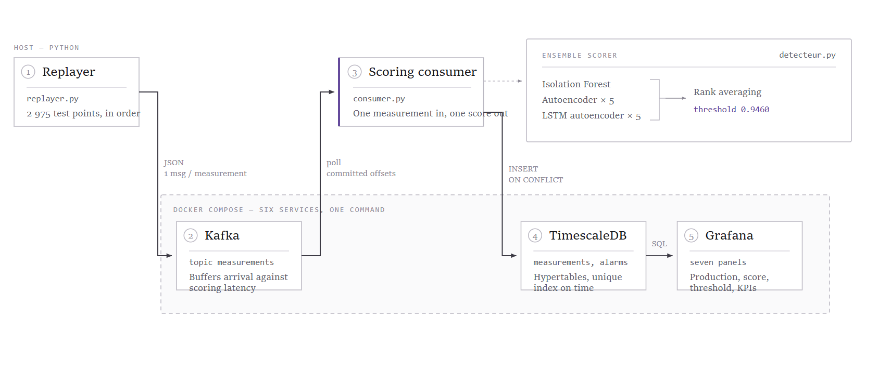
- Replayer: publishes the test partition to a Kafka topic, one measurement per second, standing in for the plant.
- Consumer: maintains a six-point sliding window, scores it through the ten networks, writes to TimescaleDB and publishes threshold crossings to an
alarmstopic. - TimescaleDB: hypertables for measurements and alarms, with a unique index on time so that replaying the demo updates rows instead of duplicating them.
- Grafana: eight panels provisioned from versioned JSON, so a clean volume comes up already configured.
The window buffer
Kafka delivers points; the LSTM needs six contiguous ones. The consumer keeps a sliding buffer that clears itself whenever the gap between two arrivals exceeds seven minutes: the same night rule as in the notebook, now enforced on a live stream rather than on a dataframe.
Show code: the streaming window buffer
class TamponGlissant:
"""
Accumulates recent measurements to rebuild an LSTM sequence.
The detector works in batches and needs seq_len contiguous points, while Kafka
delivers them one at a time. The buffer is reset as soon as a gap exceeds
gap_minutes: without that, we would fabricate evening -> morning transitions
that do not exist in the data, since night is never measured.
"""
def __init__(self, seq_len: int, gap_minutes: int):
self.seq_len = seq_len
self.gap = pd.Timedelta(f"{gap_minutes}min")
self.points = deque(maxlen=seq_len)
def ajouter(self, offset: int, horodatage, mesure: dict):
"""Returns a seq_len-row DataFrame once the window is complete."""
if self.points and horodatage - self.points[-1][1] > self.gap:
self.points.clear()
self.points.append((offset, horodatage, mesure))
if len(self.points) < self.seq_len:
return None
return pd.DataFrame(
[m for _, _, m in self.points],
index=pd.DatetimeIndex([t for _, t, _ in self.points]))
def offset_a_commiter(self):
# oldest buffered message: after a restart the window is rebuilt from it
return self.points[0][0]
A deque with maxlen makes the sliding window free: pushing a
seventh point evicts the first automatically, with no index arithmetic to get wrong.
The gap check happens before the append, so the incoming point starts the new
segment rather than being discarded with the old one. This class is the streaming
counterpart of fabriquer_sequences, and the final validation verifies that
both produce identical scores: the batch path and the one-message-at-a-time path give
the same score and alarm on every replayed test point (checked by replaying the stream,
outside the notebook).
Of the 2,975 replayed points, 2,813 receive a score. The other 162 are the five first points of each daylight segment, which have no complete window behind them. They are still written to the database with a null score rather than dropped: the sensor did record them, and a gap in a Grafana series should mean a gap in the data, not a gap in the model's coverage. That distinction is invisible in a notebook and immediately visible on a dashboard.
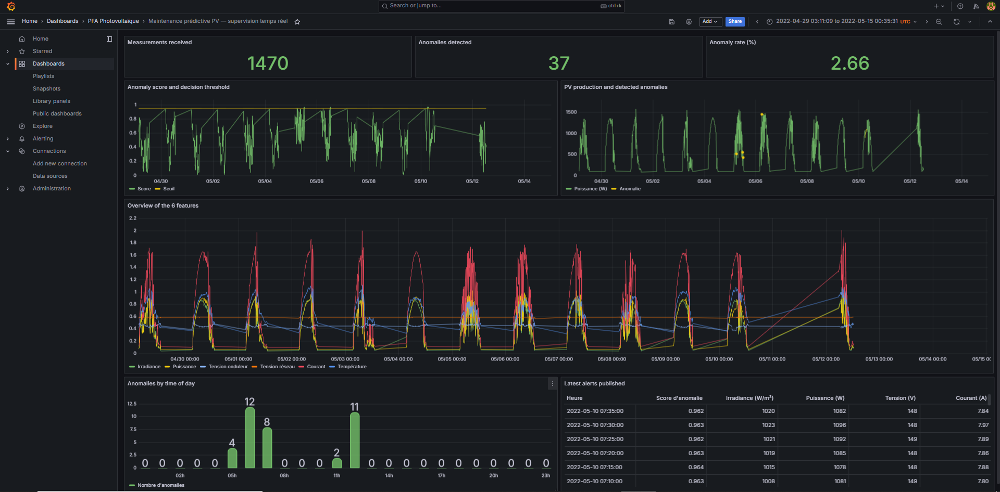
Throughput is the main weak point: scoring one measurement takes roughly 0.2 to 0.4 s on a CPU, because the ten networks are queried one after another. That is 300× faster than the five-minute measurement cadence, so it is comfortable for one plant and would not survive scoring many from a single process.
Seasonal false alarms
The study period stops on 26 May 2022, so the detector has never been evaluated on a winter period. The 33,226 scored points after that date contain no labelled fault, so every alarm in them is a false alarm. At the deployed threshold of 0.946 the system raises 252 flagged points over 279 days, about 2.6 false-alarm events a week. The rate is strongly seasonal.
| Month | Scored points | Flagged points | Events | Events per week | Alarm days | Days with data |
|---|---|---|---|---|---|---|
| May 2022 (from 26th) | 618 | 22 | 8 | 9.33 | 5 | 6 |
| June 2022 | 3,178 | 56 | 24 | 5.60 | 20 | 30 |
| July 2022 | 2,127 | 71 | 31 | 10.85 | 15 | 20 |
| August 2022 | 2,468 | 67 | 18 | 5.73 | 13 | 22 |
| September 2022 | 3,651 | 31 | 18 | 4.20 | 14 | 30 |
| October 2022 | 3,951 | 0 | 0 | 0.00 | 0 | 31 |
| November 2022 | 3,840 | 0 | 0 | 0.00 | 0 | 30 |
| December 2022 | 2,618 | 1 | 1 | 0.35 | 1 | 20 |
| January 2023 | 2,047 | 0 | 0 | 0.00 | 0 | 18 |
| February 2023 | 3,508 | 0 | 0 | 0.00 | 0 | 28 |
| March 2023 | 3,717 | 2 | 2 | 0.45 | 2 | 31 |
| April 2023 | 1,503 | 2 | 2 | 1.08 | 2 | 13 |
From June to September the system raises between 4 and 11 events a week. From October to April it raises at most about one a week. In the winter months (June to September in La Réunion), about two thirds of the flagged points fall at 08h and 16h local time (04h and 12h UTC), when the sun is low and shadows are long. The alarms may reflect real shading that nobody labelled, or this seasonal geometry. The data cannot tell these apart, so all of them count as false alarms. Training covers only late spring and summer, so every winter sun position is new to the model.
The earlier argument for leaving these months out, that a fault-free period gives a perfect and meaningless score, does not hold. A fault-free period measures the false-alarm rate directly, and it is the only data in this record that covers other seasons. It should be evaluated, not discarded.
Limits
- One plant, one dataset. Everything here comes from a single installation. The pipeline transfers; the threshold does not, and would have to be re-derived from a healthy period on any new site.
- One season. The study period stops on 26 May 2022, and the networks were trained on late spring and summer only. No fault was ever measured in winter. The seasonal section reports the false-alarm rate by month.
- Simple baselines. A nearest-neighbour distance on six raw sensors scores higher on test (PR-AUC 0.88 against 0.78) and lower on validation. Across all 17 incidents no method differs significantly from it. The ensemble's advantage is not established.
- Label quality. 56 of the 57 rows removed as a disconnected acquisition unit are labelled Fault 1, which is half of all Fault 1 data. The removal therefore changes the labelled fault set, and should be described that way. Intermittent shading is labelled by period but scored point by point, and episode boundaries are blurred by the five-minute aggregation.
- Streaming robustness. The consumer scores daytime points only (GTI above 50 W/m²), as the notebook does. Every point it cannot score is logged with its reason. A message with no valid timestamp is skipped and its offset advanced, so it cannot stop the consumer on restart. Messages are still assumed to arrive in order: a late message is not re-sorted. The message handling is covered by tests that replay the test partition through it and compare the scores with the batch path.
- Three test episodes. 3/3 detected is a good result on a small sample. The point-level metrics rest on 2,813 measurements and are far more informative than the episode count.
- Precision depends on how rare faults are. The test precision of 0.70 holds at the staged fault rate of 2.6% of points. At a more realistic 1% it would fall to about 0.5, and at 0.2% to about 0.15 to 0.2.
- ROC-AUC is flattering. 0.9964 looks conclusive and largely reflects the 2.6% positive rate. PR-AUC at 0.7765 (a lift of ×29.9 over the base rate) is the figure to compare against.
- Recall hits a wall. The operating-point table shows precision collapsing from 0.731 to 0.283 for seven points of extra recall. Some faults are simply not separable in this feature space, and no threshold fixes that.
- Labels shaped the design. The networks never see a fault, but labels were used to choose features, tune hyperparameters, choose the fusion and the threshold, and to report every number here. A site with no labelled history would need a different way to set the cut.
- Throughput. Roughly 0.2 to 0.4 s per point on a CPU, ten networks queried serially. Fine for one plant, unsuitable for a fleet.
- Frozen references age. The rank references are the deployed networks' scores on the validation period, including its 176 fault points, which is why test faults cannot rank above them and sit on a plateau just above the threshold. Panel ageing shifts the healthy baseline over years, which would slowly deflate every score.
Next steps
The following are methodological changes. They are not part of the reported results, and were not implemented:
- Batch the ten networks into a single vectorised call and drop per-point latency by an order of magnitude.
- Monitor drift on the reference distributions, and define a re-calibration procedure recomputing references and threshold together.
- Attribute each alarm to a feature (which of the six sensors drove the reconstruction error), so an alert says where to look, not only when.
- Validate on a second installation, which is the only real test of whether the approach generalises.
- Make scores comparable across days before thresholding, for example by conditioning the model of normal operation on the time of day and the season, and measure the effect on the across-day precision of section 17.
- Set the threshold from a false-alarm budget measured on healthy days, rather than from F2 on validation.
- Choose the operating point on episode detection, and report the trade-off curve of episodes caught against false alarms per week.
- Group consecutive flagged points into single alarm events, and consider requiring persistence before an alarm is raised.
- Evaluate the detector over a full year of healthy data, including winter, and decide whether recurring winter alarms are reported or masked.